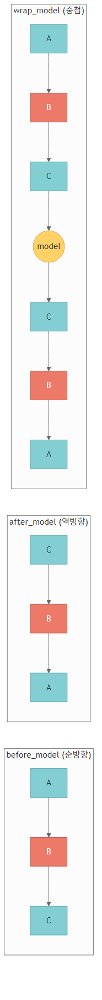
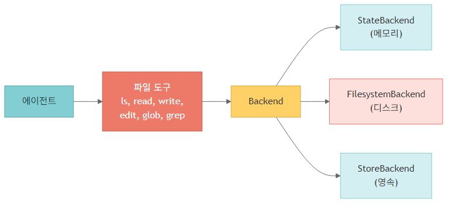
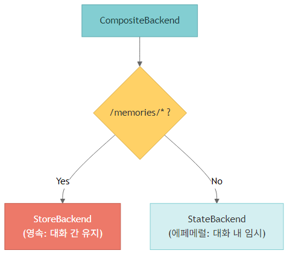
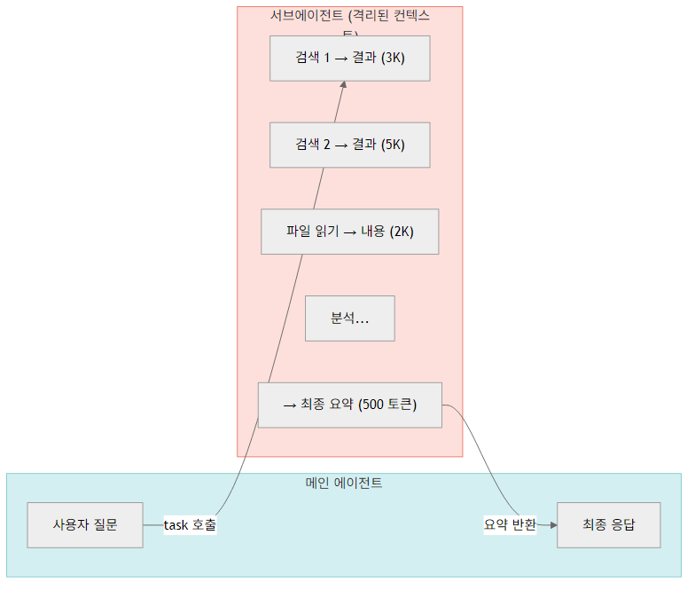
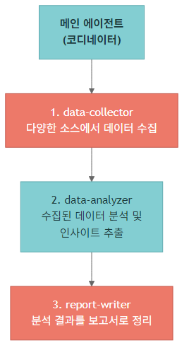
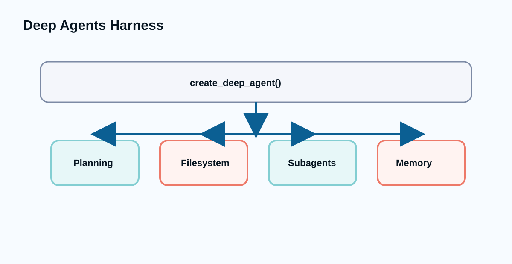
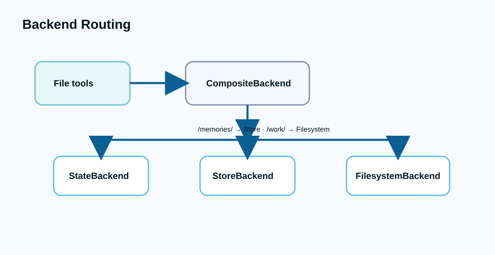

AI 에이전트 개발 실전
오리엔테이션
LangChain 기초와 LangGraph 심화 위에 파일·서브에이전트·메모리·스킬을 얹고, 긴 작업에는 TodoListMiddleware로 계획을 추가합니다.
Deep Agents는 '에이전트 앱'이 아니라 장기 작업 하네스입니다
create_deep_agent()는 LangGraph 기반 실행 그래프에 운영 미들웨어를 결합합니다. Deep Agents 0.7부터 todo 계획은 명시적으로 붙이는 선택 미들웨어입니다
Deep Agents 아키텍처는 LangGraph 위에 filesystem·subagents·memory와 선택 planning를 얹습니다
그림의 각 블록은 이후 노트북에서 코드로 직접 조정하는 표면입니다

Runtime
LangGraph CompiledStateGraph로 실행됩니다.
Middleware
파일, 메모리, 스킬, 요약, 서브에이전트를 조합합니다.
Backends
상태·파일·스토어·샌드박스를 같은 파일 도구 표면으로 연결합니다.
04_deepagents는 11개 노트북으로 실전 하네스의 부품을 조립합니다
빠른 시작에서 끝나지 않고 백엔드, 서브에이전트, 샌드박스, ACP, 비동기 위임까지 갑니다
| 구간 | 노트북 | 학습 산출 |
|---|---|---|
| 기본 생성 | 01~03 소개·Quickstart·커스터마이징 | create_deep_agent와 시스템 프롬프트, 도구, 구조화 출력 |
| 작업 공간 | 04~06 백엔드·서브에이전트·메모리/스킬 | 파일·스토어·위임·AGENTS.md·SKILL.md 설계 |
| 고급 실행 | 07~08 HITL·스트리밍·샌드박스·하네스 | 승인, 코드 실행, 컨텍스트 관리, 프로필 |
| 운영 비교 | 09~11 비교·샌드박스/ACP·AsyncSubAgent | 프레임워크 선택, 격리, 에디터 연동, 장기 배경 작업 |
Deep Agents 개요
아키텍처와 제품군, 핵심 개념 5가지를 먼저 고정합니다.
Deep Agents 제품군은 같은 하네스를 서로 다른 실행 표면으로 제공합니다
Python API, CLI, ACP를 같은 개념의 다른 사용 표면으로 구분합니다
| 표면 | 사용 방식 | 적합한 상황 |
|---|---|---|
| Python API | 애플리케이션 코드에서 create_deep_agent 호출 | 제품 안에 장기 작업 에이전트를 내장 |
| Deep Agents CLI | 터미널에서 파일 작업과 장기 작업 수행 | 로컬 개발·문서 작업 자동화 |
| ACP | 에디터나 클라이언트가 에이전트를 표준 방식으로 호출 | Zed 같은 편집기 연동 |
| Harness | 계획, 파일, 위임, 실행을 묶은 운영 셸 | 복잡한 산출물 제작과 검토 루프 |
핵심 개념 5가지는 장기 작업 실패를 막기 위한 장치입니다
Planning, context, backend, subagent, memory/skill은 기능 목록이 아니라 실패 원인별 대응책입니다
- 긴 작업을 끝까지 밀고 가기
- –Planning은 작업을 세부 단계로 나눕니다
- –Filesystem은 중간 산출물을 파일로 남깁니다
- –Context management는 불필요한 대화 누적을 줄입니다
- 반복 작업을 안정화하기
- –Backends는 상태·파일·메모리 저장 경계를 정합니다
- –Subagents는 전문 작업을 격리합니다
- –Skills는 절차 지식을 필요할 때 읽게 합니다
Deep Agents 제품군은 Python API, CLI, ACP 표면으로 나뉩니다
같은 하네스 개념을 어디에서 실행하느냐에 따라 선택지가 달라집니다
| 표면 | 사용 방식 | 대표 상황 |
|---|---|---|
| Python API | 코드에서 create_deep_agent() 호출 | 앱·서비스 안에 에이전트 내장 |
| Deep Agents CLI | 터미널에서 deepagents-cli 실행 | 로컬 코딩·파일 작업 |
| ACP | 에디터의 Agent Client Protocol 호출 | Zed 같은 클라이언트에서 에이전트 사용 |
핵심 개념 5가지는 장기 작업의 실패 원인을 막기 위한 장치입니다
계획 없이 긴 작업을 맡기면 컨텍스트가 부풀 수 있습니다. 0.7 기준으로 계획 도구는 필요할 때 명시합니다
Planning
긴 작업을 todo 단위로 나누고 진행 상태를 남깁니다. 0.7에서는 TodoListMiddleware를 붙여 활성화합니다.
Context Management
필요한 정보만 유지하고 요약으로 컨텍스트 압박을 줄입니다.
Backends
파일·상태·스토어·샌드박스를 같은 도구 표면으로 연결합니다.
Subagents
전문 역할에게 작업을 위임해 메인 컨텍스트를 보호합니다.
설치 확인은 create_deep_agent와 핵심 타입 import로 시작합니다
Deep Agents는 LangGraph CompiledStateGraph를 반환하므로 LangGraph 실행 모델을 그대로 물려받습니다
create_deep_agent
실전 트랙의 기준 함수입니다.
SubAgent
동기 서브에이전트 정의에 사용합니다.
CompiledSubAgent
이미 컴파일된 그래프를 서브에이전트로 감쌀 때 사용합니다.
from deepagents import create_deep_agent, SubAgent, CompiledSubAgent from langchain_openai import ChatOpenAI model = ChatOpenAI(model="gpt-5.4") agent = create_deep_agent(model=model) print(type(agent).__name__)
Deep Agents 기본 모델은 제품 기본값과 교재 기본값을 구분해야 합니다
노트북은 본 과정에서 OpenAI gpt-5.4를 쓰지만, Deep Agents 표준 기본은 anthropic:claude-sonnet-4-6로 설명합니다
- 교재 기본
- –ChatOpenAI(model='gpt-5.4') 객체를 create_deep_agent에 넘깁니다
- –OPENAI_API_KEY를 기준으로 실습합니다
- 프레임워크 기본
- –모델 문자열 provider:model-name도 사용할 수 있습니다
- –서브에이전트마다 다른 모델을 지정할 수 있습니다
Quickstart
invoke, Tavily 검색 도구, 빌트인 도구, stream을 빠르게 체험합니다.
초기 실행은 환경 변수와 모델 객체를 분리해 확인합니다
에이전트 생성 전에 API 키 로드와 모델 초기화를 따로 검증해야 오류 위치가 명확해집니다
load_dotenv
로컬 .env에서 키를 읽습니다.
ChatOpenAI
노트북 기준 모델 객체를 만듭니다.
create_deep_agent
모델 객체를 받아 LangGraph 실행 그래프를 반환합니다.
from dotenv import load_dotenv from langchain_openai import ChatOpenAI from deepagents import create_deep_agent load_dotenv(override=True) model = ChatOpenAI(model="gpt-5.4") agent = create_deep_agent(model=model) print(type(agent).__name__)
Quickstart에서 확인할 실행 표면은 invoke, tool, stream입니다
처음에는 기능을 많이 붙이기보다 같은 에이전트를 세 방식으로 관찰합니다
| 표면 | 확인할 것 | 운영 의미 |
|---|---|---|
| invoke | 최종 답변이 어떻게 반환되는지 | 동기 요청/응답 기본값 |
| Tavily 도구 | 일반 함수를 검색 도구로 연결하는 방식 | 외부 정보 조회 권한 |
| Built-in tools | 계획과 파일 도구가 기본 제공되는지 | 장기 작업 전제 |
| stream | 중간 메시지와 도구 호출 관찰 | 사용자 대기 경험과 디버깅 |
가장 작은 Deep Agent는 모델만 넘겨도 생성됩니다
반환 객체는 LangGraph 실행 그래프이므로 invoke와 stream을 그대로 사용합니다
model
노트북은 ChatOpenAI(model='gpt-5.4')를 사용합니다.
invoke
입력은 messages dict입니다.
반환
마지막 메시지 content에서 답을 확인합니다.
from deepagents import create_deep_agent from langchain_openai import ChatOpenAI model = ChatOpenAI(model="gpt-5.4") agent = create_deep_agent(model=model) result = agent.invoke({ "messages": [{"role": "user", "content": "Deep Agents를 한 문장으로 설명해 주세요."}] }) print(result["messages"][-1].content)
Tavily 검색 도구를 붙이면 리서치 에이전트가 됩니다
일반 함수도 타입 힌트와 docstring이 있으면 도구 설명으로 쓰입니다
검색 도구
TavilyClient.search를 감싼 Python 함수입니다.
system_prompt
검색 후 한국어 보고서로 정리하라고 지시합니다.
tools
create_deep_agent의 tools 리스트로 전달합니다.
from tavily import TavilyClient tavily = TavilyClient(api_key=os.environ["TAVILY_API_KEY"]) def internet_search(query: str, max_results: int = 5) -> dict: """인터넷에서 정보를 검색합니다.""" return tavily.search(query, max_results=max_results) research_agent = create_deep_agent( model=model, tools=[internet_search], system_prompt="검색 후 한국어 보고서를 작성하세요.", )
빌트인 표면은 파일·서브에이전트·스트리밍이고, 계획은 선택 미들웨어입니다
Deep Agents 0.7 기준으로 todo 계획을 항상 켜진 기능처럼 설명하면 안 됩니다
| 도구군 | 역할 | 주의 |
|---|---|---|
| 계획 | TodoListMiddleware로 추가 | 긴 작업에서만 의도적으로 활성화 |
| 파일 | read_file, write_file, edit_file | backend와 권한 정책이 중요 |
| 서브에이전트 | task 위임과 결과 수집 | description이 라우팅 품질을 좌우 |
| 스트리밍 | 실행 중 메시지와 이벤트 관찰 | v2 포맷으로 UI 연결 |
stream()은 장기 작업 진행을 사용자에게 보여주는 기본 통로입니다
최종 답만 기다리지 않고 중간 메시지와 도구 사용을 관찰할 수 있습니다
updates
노드별 변경분을 보여줍니다.
messages
모델 토큰을 사용자에게 표시합니다.
custom
도구나 미들웨어가 보낸 진행률을 보여줍니다.
for chunk in research_agent.stream( {"messages": [{"role": "user", "content": "LangGraph 최신 기능을 조사해 주세요."}]}, stream_mode="updates", ): print(chunk)
커스터마이징
모델 선택, 시스템 프롬프트, 커스텀 도구, response_format, 미들웨어 실행 순서를 정리합니다.
커스텀 도구는 타입 힌트와 docstring으로 모델에게 사용법을 설명합니다
도구 설명이 부정확하면 모델은 언제 호출해야 하는지 판단하기 어렵습니다
type hint
입력 스키마의 기본이 됩니다.
docstring
모델이 도구 목적을 이해하는 설명입니다.
return
모델이 후속 추론에 사용할 관측값입니다.
def calculate_total(price: float, quantity: int) -> str: """단가와 수량을 받아 총액을 계산합니다.""" total = price * quantity return f"총액은 {total:,.0f}원입니다." agent = create_deep_agent( model=model, tools=[calculate_total], )
미들웨어 스택은 프롬프트 조립과 도구 실행 사이에 순서대로 개입합니다
커스터마이징은 옵션을 많이 켜는 일이 아니라 실행 경계를 좁히는 작업입니다
| 개입 지점 | 역할 | 대표 조정 |
|---|---|---|
| System prompt | 역할과 출력 정책을 고정합니다 | system_prompt |
| Tools | 허용된 행동 공간을 정합니다 | tools=[...] |
| Structured output | 최종 답변 형태를 강제합니다 | response_format |
| Middleware | 호출 전후 정책을 삽입합니다 | model/tool middleware |
모델은 문자열 또는 ChatModel 객체로 전달할 수 있습니다
메인 에이전트와 서브에이전트의 모델을 다르게 잡는 것이 실전 비용 최적화의 시작입니다
| 방식 | 예시 | 장점 |
|---|---|---|
| ChatModel 객체 | ChatOpenAI(model='gpt-5.4') | temperature, timeout 같은 provider 설정 직접 제어 |
| 모델 문자열 | openai:gpt-5.4 | 설정 파일이나 CLI에서 바꾸기 쉬움 |
| 서브에이전트별 모델 | researcher는 mini, planner는 sonnet | 작업 난도에 맞춘 비용·지연 최적화 |
시스템 프롬프트는 역할뿐 아니라 출력 형식과 위험 기준까지 고정합니다
장기 작업 에이전트일수록 좋은 프롬프트는 정책 문서에 가깝습니다
역할
전문가 페르소나와 책임 범위를 고정합니다.
평가 기준
보안·성능·가독성처럼 검토 축을 명시합니다.
응답 형식
심각도나 섹션 구조를 고정해 후처리를 쉽게 만듭니다.
code_review_agent = create_deep_agent( model=model, system_prompt="""당신은 시니어 Python 코드 리뷰어입니다. 보안, 성능, 가독성, 모범 사례 기준으로 피드백을 제공합니다. 피드백은 심각, 권장, 좋음 세 구간으로 나눠 한국어로 작성합니다.""", )
response_format은 최종 답을 Pydantic 스키마로 강제합니다
보고서, 추천, 추출 결과처럼 후속 코드가 읽어야 하는 답변에 사용합니다
BaseModel
최종 응답 구조를 필드 단위로 정의합니다.
Field
모델이 각 필드의 의미를 이해하도록 설명합니다.
response_format
create_deep_agent에 스키마를 전달합니다.
from pydantic import BaseModel, Field class BookRecommendation(BaseModel): title: str = Field(description="책 제목") author: str = Field(description="저자") reason: str = Field(description="추천 이유") class BookRecommendationList(BaseModel): topic: str books: list[BookRecommendation] book_agent = create_deep_agent( model=model, system_prompt="도서 추천 전문가입니다.", response_format=BookRecommendationList, )
미들웨어는 시스템 프롬프트 조립과 도구 실행 사이에 순서대로 개입합니다
Filesystem, Memory, SubAgent, Skills, Summarization 미들웨어가 기본 스택을 이룹니다

Prompt assembly
메모리와 스킬이 시스템 컨텍스트에 추가됩니다.
Tool surface
파일·서브에이전트 도구가 실행 표면에 노출됩니다.
Summarization
긴 대화에서 컨텍스트를 압축합니다.
백엔드
StateBackend, FilesystemBackend, StoreBackend, CompositeBackend, LocalShellBackend, custom backend를 정리합니다.
백엔드 선택은 저장 위치보다 보안 경계와 수명 주기를 먼저 봐야 합니다
파일 도구 표면은 같아도 뒤쪽 저장소의 수명과 접근 권한은 다릅니다
| 백엔드 | 저장 경계 | 주의점 |
|---|---|---|
| StateBackend | 그래프 상태 안의 가상 파일 | 0.7 기준 인자 없는 생성자를 사용합니다 |
| FilesystemBackend | 로컬 디스크 파일 | 경로 제한과 시크릿 노출을 점검합니다 |
| StoreBackend | 장기 저장소와 namespace | namespace를 명시하거나 runtime 기반 함수로 분리합니다 |
| CompositeBackend | prefix별 저장소 라우팅 | 경로 정책이 곧 보안 정책입니다 |
| SandboxBackend | 격리 실행 환경 | 파일 전송 범위를 최소화합니다 |
FilesystemBackend를 쓸 때는 읽기·쓰기 범위를 운영 정책으로 제한해야 합니다
로컬 파일 접근은 강력하지만 잘못 열면 에이전트가 불필요한 파일까지 읽을 수 있습니다
- 필수 점검
- –root_dir를 프로젝트 작업 폴더로 제한합니다
- –가상 모드와 실제 디스크 쓰기의 차이를 설명합니다
- –API 키와 개인정보 파일을 작업 경로에서 분리합니다
- 운영 기준
- –임시 산출물과 장기 메모리 경로를 나눕니다
- –삭제 요청이 들어왔을 때 어떤 저장소를 지워야 하는지 정합니다
Backend abstraction은 파일 도구를 실제 저장소와 분리합니다
에이전트는 같은 read/write/edit 표면을 쓰지만 뒤쪽 저장소는 상태, 디스크, 스토어, 샌드박스가 될 수 있습니다

StateBackend
기본값이며 에이전트 state 안에 파일을 저장합니다.
FilesystemBackend
root_dir 안의 로컬 디스크를 사용합니다.
StoreBackend
LangGraph Store를 통해 thread 간 장기 메모리를 공유합니다.
백엔드 선택은 보안 경계와 영속성 요구를 같이 봐야 합니다
파일을 어디에 쓰는지보다 누가 읽을 수 있고 언제 사라지는지가 더 중요합니다
| 백엔드 | 강점 | 주의 |
|---|---|---|
| StateBackend | 설정 없이 바로 사용 | StateBackend()처럼 인자 없이 생성합니다 |
| FilesystemBackend | 실제 파일과 호환 | virtual_mode 기본값과 root_dir 경계를 확인합니다 |
| StoreBackend | 사용자별 장기 메모리 | namespace 정책이 필수입니다 |
| CompositeBackend | 경로별 라우팅 | /memories/와 임시 파일을 분리 |
| LocalShellBackend | 셸 실행 가능 | 개발 환경에서만 제한적으로 사용 |
Backend 0.7 계약은 생성자와 반환 형식을 따로 검수합니다
이전 호환 인자와 legacy 메서드에 기대는 예제는 최신 하네스에서 깨질 수 있습니다
| 항목 | 최신 기준 | 수업 판단 |
|---|---|---|
| StateBackend | 인자 없는 생성자로 시작 | runtime 위치 인자 예시는 사용하지 않음 |
| StoreBackend | namespace를 명시하거나 runtime 기반 함수로 분리 | namespace 생략과 namespace factory를 구분 |
| BackendProtocol | 구조화된 반환값과 도구 출력 문자열을 구분 | 파일 파서가 출력 문자열에 의존하지 않게 함 |
| legacy helpers | ls_info / glob_info류 호환 메서드 제거 | 커스텀 backend는 메서드 계약을 직접 확인 |
파일 도구는 virtual_mode, overwrite, delete 권한을 함께 봅니다
파일 쓰기는 단순 저장이 아니라 경로 격리와 삭제 가능성까지 포함한 권한 설계입니다
| 동작 | 0.7 기준 | 운영 질문 |
|---|---|---|
| virtual_mode | FilesystemBackend와 LocalShellBackend는 기본 격리를 우선 확인 | 실제 파일과 가상 파일 경계를 설명했는가 |
| write_file | 기존 파일을 교체할 수 있음 | 덮어쓰기 승인이 필요한 경로인가 |
| delete | backend가 지원하면 삭제 도구도 노출 | 쓰기 권한과 삭제 권한을 분리했는가 |
| permissions | 경로·도구·사람 승인으로 제한 | 파일 작업을 모델 판단만으로 두지 않는가 |
fork 모드와 skill tools는 같은 위임 기능으로 묶어 외우면 안 됩니다
대화 문맥 상속, tool 노출, pinned skill은 서로 다른 실행 계약입니다
| 표면 | 역할 | 주의 |
|---|---|---|
| mode='isolated' | 기본 위임: 필요한 입력만 task에 전달 | 메인 컨텍스트 보호 |
| mode='fork' | 부모 대화 문맥을 이어받는 실험적 위임 | fork에서는 별도 skills 설정과 섞지 않음 |
| metadata.include_tools | 스킬을 읽은 뒤 노출할 도구 이름을 공백 문자열로 지정 | 모든 도구를 자동 공개하지 않음 |
| pinned_skills | 실행 입력 state에서 특정 skill을 고정 | 요약 이후에도 필요한 절차를 유지 |
기본 미들웨어 대체는 같은 이름의 인스턴스로 의도를 드러냅니다
LangChain 일반 중복 규칙과 Deep Agents 기본 스택 교체 규칙을 분리해서 봅니다
대체
Deep Agents 기본 미들웨어를 바꿀 때는 같은 name을 가진 인스턴스로 교체 의도를 표현합니다.
추가
새 정책은 별도 name으로 추가해 실행 순서와 책임을 분리합니다.
검수
프롬프트, 파일, 스킬, 요약 미들웨어 중 무엇을 바꾸는지 테스트로 확인합니다.
from deepagents import create_deep_agent from deepagents.middleware import SummarizationMiddleware agent = create_deep_agent( model=model, middleware=[ SummarizationMiddleware( name="summarization", # 기본 요약 미들웨어를 의도적으로 대체 trigger=("tokens", 40_000), ) ], )
Rubric과 grader hook은 교육용 채점표와 SDK 실행 계약을 구분합니다
운영 평가는 기준 문장만 쓰는 일이 아니라 어떤 hook에서 어떤 evidence를 받는지 정하는 일입니다
| 구성 | 역할 | 주의 |
|---|---|---|
| criterion coverage | 루브릭 항목이 실제 실패 모드를 빠짐없이 덮는지 확인 | 좋은 답변 예시만으로는 부족 |
| grader hook | trace, final answer, tool trajectory 중 무엇을 채점할지 선택 | SDK hook과 교육용 결정적 grader를 구분 |
| callback | 실패 원인을 기록해 다음 실험으로 연결 | 점수만 저장하면 개선 방향이 남지 않음 |
| 회귀 평가 | 모델·프롬프트·도구 변경 전후 비교 | 한 번의 데모 성공으로 출시 판단하지 않음 |
CompositeBackend는 경로 prefix로 저장소를 라우팅합니다
/memories/는 StoreBackend로, 나머지는 StateBackend로 보내는 식의 분리가 가능합니다

default
명시 라우트가 없는 파일을 처리합니다.
routes
경로 prefix별 백엔드를 지정합니다.
policy
영속 파일과 임시 파일을 코드가 아니라 경로 정책으로 나눕니다.
CompositeBackend는 장기 메모리와 임시 작업 파일을 경로로 나눕니다
Store와 checkpointer를 같이 넘겨야 메모리와 실행 상태가 모두 유지됩니다
StoreBackend
/memories/ 아래 파일만 장기 store로 보냅니다.
StateBackend
나머지 작업 파일은 state에 둡니다.
namespace
운영에서는 runtime context의 user_id를 사용합니다.
from deepagents.backends import StateBackend, StoreBackend, CompositeBackend from langgraph.store.memory import InMemoryStore from langgraph.checkpoint.memory import MemorySaver store = InMemoryStore() checkpointer = MemorySaver() backend = CompositeBackend( default=StateBackend(), routes={"/memories/": StoreBackend(namespace=lambda rt: ("demo-user",))}, ) agent = create_deep_agent( model=model, backend=backend, store=store, checkpointer=checkpointer, )
서브에이전트
dict 기반 SubAgent, CompiledSubAgent, general-purpose 오버라이드, 컨텍스트 전파, 멀티 파이프라인을 다룹니다.
SubAgent 정의의 핵심은 name보다 description입니다
라우터는 description을 읽고 어떤 작업을 맡길지 판단합니다
name
도구로 노출되는 역할 이름입니다.
description
호출 조건을 설명하는 라우팅 문장입니다.
system_prompt
서브에이전트 내부 역할과 출력 기준입니다.
subagents = [
{
"name": "researcher",
"description": "자료 조사와 근거 수집이 필요할 때 사용합니다.",
"system_prompt": "당신은 근거 중심 리서처입니다.",
"tools": [web_search],
}
]
agent = create_deep_agent(model=model, subagents=subagents)서브에이전트 상태 관리는 상속과 독립 체크포인터를 구분해야 합니다
전문 역할을 나누는 것과 대화 히스토리를 어떻게 보존하는지는 별도 결정입니다
| 모드 | 동작 | 사용 상황 |
|---|---|---|
| 기본 상속 | 부모 실행 컨텍스트 안에서 동작합니다 | 간단한 전문 작업 위임 |
| checkpointer=True | 서브에이전트 자체 히스토리를 유지합니다 | 장기 전문 대화가 필요한 역할 |
| CompiledSubAgent | 이미 컴파일된 그래프를 서브에이전트로 사용합니다 | 전문 워크플로 재사용 |
| 도구 제한 | 역할별 도구만 노출합니다 | 권한과 비용 통제 |
서브에이전트는 메인 대화 컨텍스트를 보호하면서 전문 작업을 맡깁니다
긴 리서치나 분석 결과는 요약된 결과만 메인 에이전트로 돌아옵니다

메인 에이전트
사용자 요청을 분석하고 위임 여부를 결정합니다.
전문 서브에이전트
자기 도구와 시스템 프롬프트로 깊은 작업을 수행합니다.
결과 합성
메인 에이전트가 결과를 최종 답변으로 통합합니다.
dict 기반 SubAgent는 name, description, system_prompt, tools로 정의합니다
description은 라우터가 언제 이 역할을 호출할지 판단하는 핵심 문장입니다
name
도구처럼 호출될 고유 이름입니다.
description
위임 기준을 분명하게 적습니다.
tools
서브에이전트에게만 필요한 최소 도구를 줍니다.
research_subagent = {
"name": "researcher",
"description": "인터넷에서 주제를 조사하고 핵심 정보를 요약합니다.",
"system_prompt": "전문 리서처입니다. 출처와 함께 한국어로 요약하세요.",
"tools": [internet_search],
}
main_agent = create_deep_agent(
model=model,
system_prompt="프로젝트 매니저입니다. 필요하면 전문 역할에게 위임하세요.",
subagents=[research_subagent],
)멀티 서브에이전트 파이프라인은 수집·분석·작성 책임을 분리합니다
각 역할이 자기 산출을 짧게 반환해야 메인 컨텍스트가 부풀지 않습니다

data-collector
원시 자료를 모읍니다.
data-analyzer
패턴과 인사이트를 추출합니다.
report-writer
최종 보고서 구조로 정리합니다.
좋은 서브에이전트 설계는 역할을 많이 만드는 것이 아니라 경계를 선명하게 하는 것입니다
역할 수가 늘수록 description, 도구 권한, 결과 형식이 더 중요해집니다
| 원칙 | 좋은 설계 | 나쁜 징후 |
|---|---|---|
| 명확한 description | 호출 조건이 한 문장으로 분명 | 모든 질문에 유용하다고 적음 |
| 최소 도구 | 역할에 필요한 도구만 제공 | 모든 도구를 모든 역할에 제공 |
| 짧은 결과 | 근거와 결론만 반환 | 원문 전체를 메인 컨텍스트로 반환 |
| 모델 선택 | 난도별 모델 차등 | 모든 역할이 같은 고비용 모델 |
| TodoList 결합 | 계획 후 dispatch | 무계획 다중 호출 |
| Fork 모드 | 부모 대화 문맥을 이어받는 실험적 위임 | fork에서는 별도 skills 설정을 함께 쓰지 않습니다 |
메모리와 스킬
장기 메모리, AGENTS.md, Skills, Progressive Disclosure, 스킬 소스 우선순위를 정리합니다.
CompositeBackend는 임시 파일과 장기 메모리를 경로 prefix로 나눕니다
메모리와 작업 파일을 같은 저장소에 섞으면 삭제와 권한 정책이 흐려집니다
default
일반 작업 파일이 가는 저장소입니다.
routes
특정 prefix를 별도 backend로 보냅니다.
/memories/
데모에서는 고정 namespace를 쓰고, 운영에서는 검증된 context_schema로 사용자 경계를 연결합니다.
from deepagents.backends import CompositeBackend, StateBackend, StoreBackend backend = CompositeBackend( default=StateBackend(), routes={ "/memories/": StoreBackend( namespace=lambda rt: ("demo-user",), ), }, ) agent = create_deep_agent( model=model, backend=backend, store=store, checkpointer=checkpointer, )
메모리는 사실을 저장하고 스킬은 절차를 저장합니다
둘을 섞으면 에이전트가 무엇을 기억하고 무엇을 따라야 하는지 불분명해집니다
| 구분 | 저장 대상 | 파일/경로 |
|---|---|---|
| Memory | 사용자 선호, 프로젝트 사실, 장기 상태 | /memories/ |
| AGENTS.md | 프로젝트 전체 작업 계약과 제약 | memory 파라미터 |
| SKILL.md | 특정 작업을 수행하는 절차 지침 | skills 디렉터리 |
| Progressive Disclosure | 필요한 순간에 세부 지침 읽기 | 스킬 본문 지연 로딩 |
메모리는 사실을 저장하고 스킬은 절차를 저장합니다
둘을 섞으면 에이전트가 무엇을 기억해야 하고 무엇을 따라야 하는지 흐려집니다
| 구분 | 저장 대상 | 예시 |
|---|---|---|
| Memory | 사용자 선호, 프로젝트 상태, 장기 사실 | 선호 언어, 고객명, 이전 결정 |
| Skills | 반복 가능한 절차와 도구 사용법 | 리서치 절차, 코드 리뷰 방식, 배포 체크 |
| AGENTS.md | 프로젝트 운영 규약 | 폴더 규칙, 테스트 명령, 금지 사항 |
| CompositeBackend | 경로별 저장 정책 | /memories/만 영속 저장 |
CompositeBackend는 /memories/ 경로만 장기 저장소로 보냅니다
사용자가 기억해 달라는 정보와 임시 파일을 저장 경로로 분리합니다
store
thread를 넘는 장기 저장소입니다.
checkpointer
현재 에이전트 실행 상태를 유지합니다.
backend
파일 경로를 StoreBackend와 StateBackend로 라우팅합니다.
memory_backend = CompositeBackend( default=StateBackend(), routes={ "/memories/": StoreBackend(namespace=lambda rt: ("demo-user",)), }, ) memory_agent = create_deep_agent( model=model, system_prompt="기억할 정보는 /memories/ 폴더에 저장하세요.", backend=memory_backend, store=InMemoryStore(), checkpointer=MemorySaver(), )
Progressive Disclosure는 필요한 순간에만 스킬 세부 지침을 읽게 합니다
처음부터 모든 절차를 시스템 프롬프트에 넣으면 컨텍스트가 낭비되고 충돌 가능성이 커집니다
- SKILL.md 구조
- –언제 사용할지, 어떤 워크플로를 따를지, 어떤 파일을 더 읽을지 적습니다
- –scripts와 assets가 있으면 직접 재작성보다 재사용하도록 안내합니다
- 스킬 소스 우선순위
- –프로젝트 로컬 스킬이 가장 구체적입니다
- –사용자 홈 스킬과 번들 스킬은 더 넓은 기본 지침입니다
- 서브에이전트 상속
- –메인 에이전트가 가진 스킬을 그대로 물려받을지, 특정 역할에만 줄지 결정합니다
AGENTS.md는 memory 파라미터로 에이전트 컨텍스트에 주입할 수 있습니다
프로젝트 규약을 파일로 두면 에이전트와 서브에이전트가 같은 작업 계약을 읽습니다
memory
컨텍스트로 넣을 파일 경로를 지정합니다. skill pinning은 실행 입력의 pinned_skills로 별도 전달합니다.
FilesystemBackend
AGENTS.md와 작업 파일을 읽을 백엔드를 제공합니다.
규약
테스트 명령, 폴더 규칙, 스타일을 일관되게 적용합니다.
agent = create_deep_agent( model=model, system_prompt="코딩 어시스턴트입니다.", backend=FilesystemBackend(root_dir=tmp_dir, virtual_mode=True), memory=["/memory/AGENTS.md"], )
고급 기능
HITL decision 타입, v2 streaming, sandbox, CodeInterpreterMiddleware, ACP, CLI를 한데 묶습니다.
HITL은 interrupt_on과 checkpointer가 함께 있어야 재개할 수 있습니다
위험 도구를 멈추는 것만으로는 부족하고, 중단 지점을 저장해야 사람이 결정한 뒤 이어갈 수 있습니다
interrupt_on
승인이 필요한 도구를 지정합니다.
checkpointer
중단 지점을 저장합니다.
Command(resume)
사람의 결정을 넣어 재개합니다.
from langgraph.checkpoint.memory import InMemorySaver agent = create_deep_agent( model=model, tools=[write_file, edit_file], interrupt_on={"write_file": True, "edit_file": True}, checkpointer=InMemorySaver(), )
고급 기능은 모두 권한 경계와 관찰 가능성을 함께 요구합니다
스트리밍, 샌드박스, 인터프리터, ACP는 기능 추가가 아니라 운영 경계 확장입니다
| 기능 | 얻는 것 | 같이 정할 것 |
|---|---|---|
| v2 Streaming | 도구 호출과 메시지 진행 관찰 | UI 표시와 로그 포맷 |
| Sandbox | 코드 실행 격리 | 시크릿 반입 금지와 파일 범위 |
| Code Interpreter | 분석 코드 실행 | 실행 시간과 패키지 제한 |
| ACP | 에디터가 에이전트를 호출 | 클라이언트 권한과 세션 관리 |
HITL은 위험한 도구 호출을 사람 승인 지점으로 바꿉니다
write_file과 edit_file 같은 도구는 interrupt_on으로 사전 승인을 걸 수 있습니다

interrupt_on
승인이 필요한 도구 이름과 정책을 지정합니다.
checkpointer
승인 전 상태를 저장하기 위해 필수입니다.
decisions
approve, edit, reject, respond 네 타입으로 재개합니다.
HITL 재개는 Command(resume={'decisions': [...]}) 형식으로 처리합니다
인터럽트 개수와 같은 순서로 decisions 배열을 넘겨야 합니다
approve
도구 호출을 그대로 실행합니다.
edit
도구 이름과 인자를 사람이 수정합니다.
reject/respond
실행을 막거나 사람 메시지로 대체합니다.
from langgraph.types import Command approve = {"type": "approve"} edit = { "type": "edit", "edited_action": { "name": "write_file", "args": {"file_path": "config.yaml", "content": "debug: false"}, }, } resumed = hitl_agent.invoke( Command(resume={"decisions": [approve]}), config={"configurable": {"thread_id": "hitl-1"}}, version="v2", )
Sandbox-as-Tool은 에이전트를 밖에 두고 실행 환경만 격리합니다
노트북은 Agent-in-Sandbox보다 Sandbox-as-Tool 패턴을 권장 관점으로 설명합니다

Agent
모델과 orchestration은 통제 가능한 환경에 둡니다.
Sandbox
파일 실행과 코드 테스트를 격리합니다.
Lifecycle
작업 후 terminate 등 리소스 정리가 필수입니다.
고급 기능은 모두 권한 경계와 함께 봐야 합니다
도구를 더 많이 주는 것보다 어떤 요청에서 멈출지 정하는 것이 운영의 핵심입니다
| 기능 | 사용 목적 | 운영 주의 |
|---|---|---|
| v2 Streaming | subagent와 tool 진행 관찰 | namespace와 custom 이벤트 설계 |
| Sandbox | 코드 실행 격리 | 시크릿을 샌드박스에 넣지 않음 |
| CodeInterpreterMiddleware | QuickJS 기반 코드 실행 | PTC allowlist와 timeout 설정 |
| ACP | 에디터와 에이전트 연결 | MCP와 목적이 다름 |
| CLI | 로컬 장기 작업 실행 | 프로필과 메모리 경로 관리 |
AgentHarness
계획 도구, 가상 파일시스템, 컨텍스트 관리, 코드 실행, HITL, 스킬과 메모리, 프로필을 정리합니다.
AgentHarness는 장기 작업 산출물을 만들기 위한 실행 셸입니다
하네스는 agent.invoke 한 번이 아니라 계획, 파일, 위임, 실행을 하나의 작업 환경으로 묶습니다
| 구성 | 역할 | 학습 포인트 |
|---|---|---|
| Planning tool | TodoListMiddleware를 붙여 todo 상태를 관리합니다 | 긴 작업의 중간 상태 |
| Virtual FS | 파일 읽기·쓰기·편집 표면을 제공합니다 | 산출물 중심 작업 |
| Delegation | 서브에이전트에게 전문 작업을 맡깁니다 | 컨텍스트 보호 |
| Code execution | 분석·검증 코드를 실행합니다 | 샌드박스와 권한 경계 |
| Profiles | 모델·도구·권한 묶음을 전환합니다 | 실행 맥락별 정책 |
하네스 설계는 컨텍스트를 많이 넣는 일이 아니라 회수 가능하게 나누는 일입니다
장기 작업에서는 정보가 시스템 프롬프트, 파일, 메모리, 스킬 중 어디에 있어야 하는지 계속 분리해야 합니다
- 시스템 프롬프트에 둘 것
- –역할, 금지 행동, 출력 계약
- –실행 전체에 항상 필요한 정책
- 파일/메모리에 둘 것
- –중간 산출물과 재사용할 근거 자료
- –사용자 또는 프로젝트별 장기 사실
- 스킬에 둘 것
- –반복 가능한 절차와 도구 사용 순서
- –필요할 때만 읽어도 되는 세부 지침
하네스는 에이전트에게 작업 공간과 운영 규칙을 함께 제공합니다
단일 agent.invoke가 아니라 장기 작업을 끝까지 밀고 가는 실행 환경으로 봐야 합니다
하네스 기능은 사용자 요청을 산출물 중심 작업으로 바꾸는 데 초점이 있습니다
계획, 파일, 코드 실행이 결합되어야 장기 작업의 중간 상태가 남습니다
| 기능 | 역할 | 검증 방법 |
|---|---|---|
| 계획 도구 | 작업을 단계화 | 완료·미완료가 드러남 |
| 가상 파일시스템 | 산출물 저장 | 파일 diff와 결과물 확인 |
| 컨텍스트 조립 | 입력 규약·메모리·스킬 결합 | 필요한 지침만 주입 |
| 런타임 압축 | 긴 대화 요약 | 작업 핵심이 보존되는지 확인 |
| 코드 실행 | 분석·테스트 수행 | 격리와 timeout 확인 |
프로필은 모델과 도구, 권한을 실행 맥락별로 묶는 설정 단위입니다
같은 하네스라도 로컬 개발, 리서치, 코드 리뷰 프로필의 권한은 달라야 합니다
model
프로필별 기본 모델을 고정합니다.
tools
허용 도구와 백엔드를 제한합니다.
permissions
파일 쓰기와 셸 실행 같은 위험 권한을 분리합니다.
profile = {
"name": "research",
"model": "gpt-5.4",
"backend": "filesystem",
"root_dir": "./workspace",
"tools": ["read_file", "write_file", "internet_search"],
"permissions": {"shell": "deny", "write_file": "ask"},
}
print(profile["name"], profile["model"])하네스 설계의 핵심은 컨텍스트를 많이 주는 것이 아니라 회수 가능하게 주는 것입니다
장기 작업에서는 어떤 정보가 시스템 프롬프트, 메모리, 파일, 스킬에 있어야 하는지 계속 분리해야 합니다
- 입력 컨텍스트 조립
- –요청, AGENTS.md, memory, skill 지침을 역할별로 조립합니다
- –서브에이전트에는 필요한 일부만 전파합니다
- 런타임 컨텍스트 압축
- –대화가 길어질 때 요약은 작업 의도와 완료 기준을 보존해야 합니다
- –파일 산출물은 대화보다 더 안정적인 상태 저장소가 됩니다
프레임워크 비교
Deep Agents, OpenCode, Claude Agent SDK의 차이와 사용 사례별 추천을 정리합니다.
Deep Agents, OpenCode, Claude Agent SDK는 실행 위치와 내장 방식이 다릅니다
비교는 기능 개수가 아니라 누가 어디서 어떤 권한으로 실행하는지를 기준으로 봅니다
| 축 | 비교 질문 | 판단 기준 |
|---|---|---|
| 실행 모델 | 앱 안에 내장할 것인가, CLI에서 쓸 것인가 | 제품 내장 vs 로컬 작업 |
| 멀티테넌시 | 사용자별 권한과 상태가 필요한가 | 서비스 운영 요구 |
| 모델 선택 | 여러 provider와 모델을 바꿀 수 있는가 | 비용과 품질 최적화 |
| 파일 권한 | 어떤 파일을 읽고 쓸 수 있는가 | 보안과 감사 |
| 확장 표면 | 도구, 스킬, 서브에이전트를 어떻게 붙이는가 | 팀 운영 방식 |
프레임워크 선택은 사용 사례 문장으로 결정해야 합니다
기술 이름보다 실행 맥락을 먼저 쓰면 선택지가 좁혀집니다
로컬 개발 보조
개발자 개인 작업과 파일 편집이 중심입니다.
제품 내장 에이전트
사용자별 상태, 권한, 과금, 로그가 필요합니다.
에디터 연동
표준 프로토콜로 에이전트를 클라이언트에 붙입니다.
장기 업무 자동화
계획, 파일, 서브에이전트, 메모리가 함께 필요합니다.
Deep Agents, OpenCode, Claude Agent SDK는 같은 '코딩 에이전트'가 아닙니다
비교 기준은 기능 개수보다 실행 모델, 배포, 멀티테넌시, 모델 설정입니다
| 항목 | Deep Agents | OpenCode / Claude SDK |
|---|---|---|
| 실행 모델 | Python/LangGraph 앱 안에 내장 | CLI 또는 SDK 중심 실행 |
| 배포 | 서비스·멀티테넌트 구성에 유리 | 개발자 로컬·특정 플랫폼에 강점 |
| 모델 설정 | 프로바이더 문자열과 ChatModel 객체 | 도구별 설정 방식이 다름 |
| 확장 | 백엔드·미들웨어·서브에이전트 | 각 생태계 플러그인/도구 규약 |
| 적합한 작업 | 제품에 들어가는 장기 작업 에이전트 | 개발자 워크플로 자동화 |
사용 사례별 추천은 '어디에서 누가 실행하나'로 정리됩니다
로컬 개발자 보조와 제품 내장 에이전트는 같은 선택지가 아닙니다
LOCAL
개발자 개인
APP
제품 내장
EDITOR
에디터 통합
TEAM
운영 거버넌스
CLI 중심 도구가 빠릅니다.
Deep Agents처럼 Python API와 상태 저장이 중요합니다.
ACP나 특정 SDK의 클라이언트 경험을 봅니다.
권한, 메모리, 로그, 배포 정책을 비교합니다.
프레임워크 선택은 기능 데모가 아니라 운영 위치와 책임 경계의 결정입니다.
마이그레이션은 도구 목록보다 메모리와 파일 계약을 먼저 옮겨야 합니다
장기 작업 에이전트의 핵심 상태는 프롬프트가 아니라 산출물, 메모리, 권한 정책에 있습니다
- 공통 고려사항
- –도구 이름과 입력 스키마가 바뀌면 모델 호출 품질이 달라집니다
- –파일 경로와 작업 디렉터리 규칙은 사용자 경험에 직접 영향을 줍니다
- Deep Agents로 옮길 때 장점
- –LangGraph 실행·체크포인터·스토어를 그대로 활용할 수 있습니다
- –SubAgent와 backend를 앱 요구사항에 맞게 조합할 수 있습니다
- 주의사항
- –무제한 파일/셸 권한을 기본값처럼 열면 보안 경계가 무너집니다
선택 질문은 네 가지로 압축할 수 있습니다
답이 선명하면 프레임워크 논쟁보다 구현 경계가 먼저 정해집니다
| 질문 | Deep Agents 쪽 신호 | 다른 도구 쪽 신호 |
|---|---|---|
| 제품 안에 넣을 것인가 | 예, 사용자별 상태와 배포가 필요 | 아니오, 개인 로컬 자동화 중심 |
| 멀티테넌시가 필요한가 | 사용자별 namespace와 store 필요 | 단일 개발자 세션 |
| 파일·메모리 계약이 복잡한가 | 백엔드 라우팅이 필요 | 일회성 코드 작업 |
| 에디터 경험이 우선인가 | ACP 서버로 연결 가능 | 특정 에디터 SDK가 더 빠름 |
샌드박스와 ACP
Sandbox-as-Tool, 보안 가이드라인, 파일 라이프사이클, ACP 서버와 에디터 연동을 정리합니다.
Sandbox-as-Tool은 에이전트 제어면과 실행 환경을 분리합니다
에이전트를 통째로 샌드박스에 넣는 것보다 실행만 격리하는 패턴을 먼저 검토합니다
| 패턴 | 구조 | 주의점 |
|---|---|---|
| Agent-in-Sandbox | 에이전트 전체를 격리 환경 안에서 실행 | 시크릿과 제어면 관리가 복잡합니다 |
| Sandbox-as-Tool | 에이전트는 밖에 두고 실행 도구만 격리 | 권장 패턴으로 설명됩니다 |
| 파일 전송 | 필요한 입력 파일만 샌드박스로 전달 | 민감 파일 반입 금지 |
| 결과 회수 | 실행 결과와 산출물만 되돌립니다 | 출력 파일 검증 필요 |
ACP는 도구 서버가 아니라 에이전트를 클라이언트에 노출하는 연결 표면입니다
MCP와 ACP를 혼동하면 도구 서버를 만들 곳에 에이전트 서버를 만들거나 반대로 설계할 수 있습니다
- MCP
- –외부 도구와 데이터 소스를 모델/에이전트에 연결합니다
- –서버는 도구를 제공하고 클라이언트가 호출합니다
- ACP
- –에디터나 앱이 에이전트를 클라이언트처럼 호출합니다
- –세션, 메시지, 실행 결과를 에이전트 프로토콜로 다룹니다
Sandbox-as-Tool은 실행 환경을 격리하고 에이전트 제어면은 밖에 둡니다
시크릿과 정책은 에이전트 쪽에 남기고, 샌드박스에는 실행에 필요한 최소 파일만 보냅니다
격리
코드 실행과 파일 변경을 별도 환경에 둡니다.
전송
필요한 파일만 업로드하고 결과만 회수합니다.
종료
작업 후 샌드박스 리소스를 종료합니다.
샌드박스 보안은 '격리했으니 안전하다'가 아니라 '무엇을 넣지 않을지'가 핵심입니다
노트북은 시크릿을 샌드박스 안에 넣지 말라고 강조합니다
| 규칙 | 실천 | 위험 |
|---|---|---|
| 시크릿 금지 | API 키는 샌드박스 밖에서 관리 | 실행 환경 탈취 시 키 노출 |
| 파일 최소화 | 필요한 입력만 업로드 | 불필요한 내부 자료 유출 |
| 라이프사이클 | 작업 후 terminate | 비용 증가와 잔류 프로세스 |
| 권한 | network, shell, write를 정책화 | 에이전트가 임의 명령 실행 |
| 로그 | 민감정보 마스킹 | 트레이스에 원문 입력 저장 |
ACP 서버는 에디터가 에이전트를 표준 클라이언트처럼 호출하게 합니다
MCP가 도구 서버라면 ACP는 에이전트 클라이언트 프로토콜입니다
AgentServerACP
Deep Agent를 ACP 서버로 감쌉니다.
run_agent
ACP 런타임에서 서버를 실행합니다.
에디터
Zed나 Toad 같은 클라이언트가 연결합니다.
import asyncio from acp import run_agent from deepagents import create_deep_agent from deepagents_acp.server import AgentServerACP from langgraph.checkpoint.memory import MemorySaver async def main() -> None: agent = create_deep_agent( model="google_genai:gemini-3.5-flash", system_prompt="You are a helpful coding assistant", checkpointer=MemorySaver(), ) await run_agent(AgentServerACP(agent)) asyncio.run(main())
MCP와 ACP는 이름이 비슷하지만 연결 방향이 다릅니다
혼동하면 도구 서버를 만들어야 할 곳에 에이전트 서버를 만들거나 반대로 설계할 수 있습니다
- MCP
- –모델 또는 에이전트가 사용할 도구와 리소스를 외부 서버로 노출합니다
- –검색, DB, 파일 시스템 같은 기능 제공에 적합합니다
- ACP
- –에디터나 클라이언트가 에이전트 자체와 대화하는 프로토콜입니다
- –코딩 에이전트 UX와 장기 작업 세션에 적합합니다
비동기 서브에이전트
AsyncSubAgent, supervisor, 5가지 관리 도구, langgraph.json 공동 배포, v2 streaming 관찰을 정리합니다.
AsyncSubAgent는 오래 걸리는 작업을 별도 그래프로 시작하게 합니다
사용자에게 즉시 제어를 돌려주고 배경 작업 상태를 나중에 확인해야 할 때 사용합니다
name
슈퍼바이저가 호출할 작업 이름입니다.
graph_id/url
같은 배포의 그래프 또는 원격 그래프를 지정합니다.
tools
슈퍼바이저에게 관리 도구가 노출됩니다.
from deepagents import AsyncSubAgent, create_deep_agent research_agent = AsyncSubAgent( name="deep_research", description="오래 걸리는 리서치 작업을 백그라운드로 수행합니다.", graph_id="research_graph", ) supervisor = create_deep_agent( model=model, async_subagents=[research_agent], )
Deep Agents는 filesystem, subagents, memory와 선택 planning을 묶은 agent harness입니다
공식 문서는 Deep Agents를 LangGraph 위의 장기 작업 하네스로 설명합니다. todo planning은 필요할 때 미들웨어로 추가합니다.
| 도구 | 역할 | 운영 의미 |
|---|---|---|
| create_async_task | 새 배경 작업을 시작합니다 | 즉시 결과를 기다리지 않습니다 |
| check_async_task | 작업 상태와 결과를 확인합니다 | 사용자에게 진행 상황을 설명합니다 |
| update_async_task | 작업 지시를 보강합니다 | 장기 작업의 요구 변경 대응 |
| cancel_async_task | 작업을 취소합니다 | 비용과 위험 통제 |
| list_async_tasks | 실행 중 작업 목록을 봅니다 | 세션 상태 관리 |
AsyncSubAgent는 즉시 끝나지 않는 작업을 별도 그래프로 맡깁니다
공동 ASGI 배포에서는 url 없이 graph_id로 연결하고, 원격이면 url을 지정합니다
graph_id
배경 작업을 처리할 그래프 이름입니다.
url
원격 배포일 때 지정합니다.
description
언제 비동기로 위임해야 하는지 설명합니다.
from deepagents import AsyncSubAgent, create_deep_agent researcher = AsyncSubAgent( name="researcher", description="장시간 웹 리서치와 자료 합성을 수행합니다.", graph_id="researcher", ) coder = AsyncSubAgent( name="coder", description="여러 파일을 수정하는 긴 코딩 작업을 수행합니다.", graph_id="coder", url="https://coder-deployment.langsmith.dev", )
슈퍼바이저에게는 비동기 작업을 관리하는 5가지 도구가 노출됩니다
핵심은 시작 직후 결과를 기다리지 않고 사용자에게 제어를 돌려주는 것입니다
| 도구 | 역할 | 사용 시점 |
|---|---|---|
| create_async_task | 배경 작업 시작 | filesystem/subagents/memory와 선택 planning 설명 |
| check_async_task | 특정 작업 상태 확인 | 사용자가 진행 상황을 물을 때 |
| list_async_tasks | 작업 목록 조회 | 여러 배경 작업 관리 |
| cancel_async_task | 작업 취소 | 요구가 바뀌거나 비용 제한 |
| send_async_message | 중도 지시 전달 | 작업 방향 조정 |
비동기 위임의 좋은 대화는 시작·반환·조회·조정으로 나뉩니다
작업을 만들자마자 check하지 않는 것이 UX와 비용 모두에 중요합니다
START
create task
RETURN
control
CHECK
status
ADJUST
message
MERGE
result
장기 작업을 시작하고 task_id를 받습니다.
즉시 사용자에게 제어를 돌려줍니다.
사용자가 물을 때 상태를 조회합니다.
필요하면 중도 지시를 보냅니다.
완료 결과를 최종 답변에 합칩니다.
비동기 서브에이전트는 빨리 답하려는 기술이 아니라 긴 작업을 대화 밖에서 안전하게 굴리는 기술입니다.
개념 근거와 하네스 모델
Deep Agents 개념은 LangChain 공식 Deep Agents 문서와 LangGraph 공식 런타임 설명을 기준으로 보강합니다.
Deep Agents는 planning, filesystem, subagents, memory를 묶은 agent harness입니다
공식 문서는 Deep Agents를 LangGraph 위에서 filesystem, context management, subagents, long-term memory를 제공하는 하네스로 설명합니다. todo 계획은 필요할 때 미들웨어로 추가합니다.

Planning
TodoListMiddleware를 붙인 경우 긴 작업을 todo와 단계로 나눕니다.
Filesystem
중간 산출물을 파일로 보존합니다.
Subagents
전문 작업을 별도 컨텍스트로 위임합니다.
Backend routing은 파일 도구 표면과 실제 저장소를 분리합니다
Deep Agents 공식 backends 문서는 StateBackend, StoreBackend, FilesystemBackend, routes 기반 구성을 설명합니다.

File tools
ls, read_file, write_file, edit_file 같은 표면은 같습니다.
Routes
경로 prefix로 저장소를 바꿉니다.
Policy
저장소 선택은 보안·수명·삭제 정책입니다.
Deep Agents 개념 보강 출처는 공식 문서와 LangGraph 런타임 설명을 기준으로 삼습니다
Deep Agents는 논문보다 공식 API·개념 문서가 더 직접적인 근거입니다.
| 개념 | 출처 | 덱 반영 |
|---|---|---|
| Agent harness | Deep Agents official overview | filesystem/subagents/memory와 선택 planning 설명 |
| Backends | Deep Agents official backends docs | StateBackend/StoreBackend/FilesystemBackend 경계 |
| Skills | Deep Agents official skills docs | progressive disclosure와 skill loading |
| Runtime | LangGraph official overview | durable execution, HITL, streaming 기반 설명 |
| Skills tools | Deep Agents official skills docs | metadata.include_tools는 공백 구분 문자열, pinned_skills는 실행 입력 state |
01_introduction.ipynb
01_introduction.ipynb의 실행 코드 셀을 순서대로 훑습니다. ipynb와 덱만으로 코드 흐름을 복습할 수 있게 구성했습니다.
01_introduction 코드 01
이 코드는 실습에 필요한 패키지와 객체를 준비합니다.
# deepagents 패키지 버전 확인 import deepagents print(f"deepagents 버전: {deepagents.__version__}")
01_introduction 코드 02
이 코드는 Deep Agent 생성과 하네스 옵션 연결을 보여줍니다.
# 주요 모듈 임포트 확인 from deepagents import create_deep_agent, SubAgent, CompiledSubAgent from deepagents import FilesystemMiddleware, MemoryMiddleware, SubAgentMiddleware from deepagents.backends import StateBackend, FilesystemBackend, StoreBackend, CompositeBackend from deepagents.backends.protocol import BackendProtocol print("모든 주요 모듈을 성공적으로 임포트했습니다!")
01_introduction 코드 03
이 코드는 실습에 필요한 패키지와 객체를 준비합니다.
# 의존 패키지 버전 확인 import importlib.metadata print(f"langchain 버전: {importlib.metadata.version('langchain')}") print(f"langgraph 버전: {importlib.metadata.version('langgraph')}")
01_introduction 코드 04
이 코드는 Deep Agent 생성과 하네스 옵션 연결을 보여줍니다.
# create_deep_agent 함수 시그니처 확인 import inspect sig = inspect.signature(create_deep_agent) print("create_deep_agent() 파라미터:") for name, param in sig.parameters.items(): default = param.default if param.default is not inspect.Parameter.empty else "(필수)" print(f" - {name}: {default}")
02_quickstart.ipynb
02_quickstart.ipynb의 실행 코드 셀을 순서대로 훑습니다. ipynb와 덱만으로 코드 흐름을 복습할 수 있게 구성했습니다.
02_quickstart 코드 01
이 코드는 실습에 필요한 패키지와 객체를 준비합니다.
# 환경 변수 로드 from dotenv import load_dotenv import os load_dotenv() assert os.environ.get("OPENAI_API_KEY"), "OPENAI_API_KEY가 설정되지 않았습니다!" assert os.environ.get("TAVILY_API_KEY"), "TAVILY_API_KEY가 설정되지 않았습니다!" print("API 키가 정상적으로 로드되었습니다.")
02_quickstart 코드 02
이 코드는 실습에 필요한 패키지와 객체를 준비합니다.
# Observability 설정 (선택) - LangSmith 또는 Langfuse # .env에 키를 설정하거나, 아래 주석을 해제하여 직접 입력하세요. # os.environ["LANGFUSE_SECRET_KEY"] = "sk-lf-..." # os.environ["LANGFUSE_PUBLIC_KEY"] = "pk-lf-..." # os.environ["LANGFUSE_HOST"] = "https://lf.ddok.ai" import os # LangSmith: LANGSMITH_TRACING=true 시 자동 활성화 (코드 수정 불필요) if os.environ.get("LANGSMITH_TRACING", "").lower() == "true": project = os.environ.get("LANGSMITH_PROJECT", "default") print(f"LangSmith tracing ON — project: {project}") # Langfuse: invoke/stream 호출 시 config={"callbacks": [langfuse_handler]} 전달 langfuse_handler = None if os.environ.get("LANGFUSE_SECRET_KEY"): from langfuse.langchain import CallbackHandler langfuse_handler = CallbackHandler() print(f"Langfuse tracing ON — {os.environ.get('LANGFUSE_HOST', '')}") # Langfuse config: pass to invoke/stream/batch calls lf_config = {"callbacks": [langfuse_handler]} if langfuse_handler else {}
02_quickstart 코드 03
이 코드는 Deep Agent 생성과 하네스 옵션 연결을 보여줍니다.
from deepagents import create_deep_agent from langchain_openai import ChatOpenAI # OpenAI gpt-5.4 모델 설정 (Deep Agents 기본은 anthropic:claude-sonnet-4-6) model = ChatOpenAI(model="gpt-5.4") # 기본 에이전트 생성 agent = create_deep_agent(model=model) print(f"에이전트 타입: {type(agent).__name__}") print("에이전트가 성공적으로 생성되었습니다!")
02_quickstart 코드 04
이 코드는 노트북 실습의 실행 단계를 그대로 확인하기 위한 코드입니다.
# 에이전트에 간단한 질문하기 result = agent.invoke( {"messages": [{"role": "user", "content": "안녕하세요! 당신은 어떤 도구를 사용할 수 있나요? 간단히 목록으로 알려주세요."}]}, config=lf_config, ) # 마지막 메시지 (AI 응답) 출력 print(result["messages"][-1].content)
02_quickstart 코드 05 (1/2)
이 코드는 실습에 필요한 패키지와 객체를 준비합니다.
from typing import Literal from tavily import TavilyClient tavily_client = TavilyClient(api_key=os.environ["TAVILY_API_KEY"]) def internet_search( query: str, max_results: int = 5, topic: Literal["general", "news", "finance"] = "general", include_raw_content: bool = False, ) -> dict: """인터넷에서 정보를 검색합니다. Args: query: 검색할 질문 또는 키워드 max_results: 반환할 최대 결과 수 topic: 검색 주제 카테고리 include_raw_content: 원본 콘텐츠 포함 여부 """ return tavily_client.search( query,
02_quickstart 코드 05 (2/2)
이 코드는 실습에 필요한 패키지와 객체를 준비합니다.
max_results=max_results,
include_raw_content=include_raw_content,
topic=topic,
)
print(f"도구 이름: {internet_search.__name__}")
print(f"도구 설명: {internet_search.__doc__.strip().splitlines()[0]}")02_quickstart 코드 06
이 코드는 Deep Agent 생성과 하네스 옵션 연결을 보여줍니다.
# 리서치 에이전트 생성 — 검색 도구 + 커스텀 시스템 프롬프트 research_agent = create_deep_agent( model=model, tools=[internet_search], system_prompt="당신은 전문 리서처입니다. 사용자의 질문에 대해 인터넷 검색을 수행하고, 결과를 정리하여 한국어로 보고서를 작성합니다.", ) print("리서치 에이전트가 생성되었습니다!")
02_quickstart 코드 07
이 코드는 노트북 실습의 실행 단계를 그대로 확인하기 위한 코드입니다.
# 리서치 에이전트 실행 result = research_agent.invoke( {"messages": [{"role": "user", "content": "LangGraph가 무엇인지 검색해서 간단히 요약해 주세요."}]}, config=lf_config, ) print(result["messages"][-1].content)
02_quickstart 코드 08 (1/2)
이 코드는 노트북 실습의 실행 단계를 그대로 확인하기 위한 코드입니다.
# updates 모드로 스트리밍 — 각 단계별 진행 상황 확인 print("=== 스트리밍 실행 (updates 모드) ===") print() for chunk in research_agent.stream( {"messages": [{"role": "user", "content": "Python 3.13의 주요 변경사항을 검색해서 3줄로 요약해 주세요."}]}, stream_mode="updates", config=lf_config, ): # 각 노드의 실행 결과를 출력 for node_name, node_data in chunk.items(): if not node_data: continue msgs = node_data.get("messages", []) # LangGraph may wrap state updates in Overwrite objects if hasattr(msgs, "value"): msgs = msgs.value if not msgs: continue last_msg = msgs[-1] # 도구 호출이 있으면 표시 if hasattr(last_msg, "tool_calls") and last_msg.tool_calls:
02_quickstart 코드 08 (2/2)
이 코드는 노트북 실습의 실행 단계를 그대로 확인하기 위한 코드입니다.
for tc in last_msg.tool_calls: print(f"[도구 호출] {tc['name']}({tc['args'].get('query', '')[:50]}...)") # AI 메시지 내용이 있으면 표시 elif hasattr(last_msg, "content") and last_msg.content and not hasattr(last_msg, "tool_call_id"): content = last_msg.content if isinstance(last_msg.content, str) else str(last_msg.content) if content.strip(): print(f"\n[최종 응답]\n{content[:500]}")
02_quickstart 코드 09
이 코드는 노트북 실습의 실행 단계를 그대로 확인하기 위한 코드입니다.
# messages 모드로 스트리밍 — 토큰 단위 실시간 출력 print("=== 스트리밍 실행 (messages 모드) ===") print() for msg, metadata in research_agent.stream( {"messages": [{"role": "user", "content": "'Hello World'를 출력하는 Python 코드를 작성해 주세요."}]}, stream_mode="messages", config=lf_config, ): # AI 메시지의 텍스트 청크만 출력 if hasattr(msg, "content") and msg.content and metadata and metadata.get("langgraph_node") == "model": print(msg.content, end="", flush=True) print() # 줄바꿈
03_customization.ipynb
03_customization.ipynb의 실행 코드 셀을 순서대로 훑습니다. ipynb와 덱만으로 코드 흐름을 복습할 수 있게 구성했습니다.
03_customization 코드 01
이 코드는 Deep Agent 생성과 하네스 옵션 연결을 보여줍니다.
# 환경 설정 from dotenv import load_dotenv import os load_dotenv() assert os.environ.get("OPENAI_API_KEY"), "OPENAI_API_KEY가 설정되지 않았습니다!" print("환경 설정 완료") # OpenAI gpt-5.4 모델 초기화 (Deep Agents 기본은 anthropic:claude-sonnet-4-6) from deepagents import create_deep_agent from langchain_openai import ChatOpenAI model = ChatOpenAI(model="gpt-5.4") print(f"기본 모델: {model.model_name}")
03_customization 코드 02
이 코드는 실습에 필요한 패키지와 객체를 준비합니다.
# Observability 설정 (선택) - LangSmith 또는 Langfuse # .env에 키를 설정하거나, 아래 주석을 해제하여 직접 입력하세요. # os.environ["LANGFUSE_SECRET_KEY"] = "sk-lf-..." # os.environ["LANGFUSE_PUBLIC_KEY"] = "pk-lf-..." # os.environ["LANGFUSE_HOST"] = "https://lf.ddok.ai" import os # LangSmith: LANGSMITH_TRACING=true 시 자동 활성화 (코드 수정 불필요) if os.environ.get("LANGSMITH_TRACING", "").lower() == "true": project = os.environ.get("LANGSMITH_PROJECT", "default") print(f"LangSmith tracing ON — project: {project}") # Langfuse: invoke/stream 호출 시 config={"callbacks": [langfuse_handler]} 전달 langfuse_handler = None if os.environ.get("LANGFUSE_SECRET_KEY"): from langfuse.langchain import CallbackHandler langfuse_handler = CallbackHandler() print(f"Langfuse tracing ON — {os.environ.get('LANGFUSE_HOST', '')}") # Langfuse config: pass to invoke/stream/batch calls lf_config = {"callbacks": [langfuse_handler]} if langfuse_handler else {}
03_customization 코드 03
이 코드는 Deep Agent 생성과 하네스 옵션 연결을 보여줍니다.
# OpenAI gpt-5.4 모델 사용 (위에서 초기화한 model 객체) agent_oai = create_deep_agent( model=model, ) print(f"에이전트 생성 완료: {type(agent_oai).__name__}") # 참고: 다른 프로바이더를 사용하려면 해당 API 키를 설정하고 아래처럼 호출 # agent_anthropic = create_deep_agent(model="anthropic:claude-sonnet-4-6") # Deep Agents 기본 # agent_gemini = create_deep_agent(model="google_genai:gemini-3.5-flash") # agent_openrouter = create_deep_agent(model="openrouter:anthropic/claude-sonnet-4-6")
03_customization 코드 04 (1/2)
이 코드는 Deep Agent 생성과 하네스 옵션 연결을 보여줍니다.
# 코드 리뷰 전문 에이전트 code_review_agent = create_deep_agent( model=model, system_prompt="""당신은 시니어 Python 코드 리뷰어입니다. 코드를 리뷰할 때 아래 기준으로 피드백을 제공합니다: 1. **보안**: 인젝션, XSS 등 보안 취약점 2. **성능**: 불필요한 연산, 메모리 누수 3. **가독성**: 네이밍, 구조, 주석 4. **모범 사례**: PEP 8, 타입 힌트, 에러 처리 피드백 형식: - 🔴 심각: 반드시 수정 필요 - 🟡 권장: 개선하면 좋음 - 🟢 좋음: 잘 작성된 부분""", ) # 코드 리뷰 실행 result = code_review_agent.invoke( {"messages": [{"role": "user", "content": """ 다음 Python 코드를 리뷰해 주세요:
03_customization 코드 04 (2/2)
이 코드는 Deep Agent 생성과 하네스 옵션 연결을 보여줍니다.
```python def get_user(id): query = f"SELECT * FROM users WHERE id = {id}" result = db.execute(query) return result ``` """}]}, config=lf_config, ) print(result["messages"][-1].content)
03_customization 코드 05 (1/3)
이 코드는 Deep Agent 생성과 하네스 옵션 연결을 보여줍니다.
import math def calculate_compound_interest( principal: float, annual_rate: float, years: int, compounds_per_year: int = 12, ) -> dict: """복리 이자를 계산합니다. Args: principal: 원금 (원) annual_rate: 연이율 (예: 0.05 = 5%) years: 투자 기간 (년) compounds_per_year: 연간 복리 횟수 (기본: 12 = 월복리) """ amount = principal * (1 + annual_rate / compounds_per_year) ** (compounds_per_year * years) interest = amount - principal return { "원금": f"{principal:,.0f}원", "최종 금액": f"{amount:,.0f}원",
03_customization 코드 05 (2/3)
이 코드는 Deep Agent 생성과 하네스 옵션 연결을 보여줍니다.
"이자 수익": f"{interest:,.0f}원", "수익률": f"{(interest / principal) * 100:.2f}%", } def convert_temperature( value: float, from_unit: str, to_unit: str, ) -> str: """온도 단위를 변환합니다. Args: value: 변환할 온도 값 from_unit: 원래 단위 ('celsius', 'fahrenheit', 'kelvin') to_unit: 변환할 단위 ('celsius', 'fahrenheit', 'kelvin') """ # 먼저 섭씨로 변환 if from_unit == "fahrenheit": celsius = (value - 32) * 5 / 9 elif from_unit == "kelvin": celsius = value - 273.15
03_customization 코드 05 (3/3)
이 코드는 Deep Agent 생성과 하네스 옵션 연결을 보여줍니다.
else: celsius = value # 목표 단위로 변환 if to_unit == "fahrenheit": result = celsius * 9 / 5 + 32 elif to_unit == "kelvin": result = celsius + 273.15 else: result = celsius return f"{value} {from_unit} = {result:.2f} {to_unit}" # 커스텀 도구를 사용하는 에이전트 생성 calculator_agent = create_deep_agent( model=model, tools=[calculate_compound_interest, convert_temperature], system_prompt="당신은 계산과 단위 변환을 도와주는 어시스턴트입니다. 항상 도구를 사용하여 정확한 계산을 수행하세요.", ) print("계산 에이전트가 생성되었습니다!")
03_customization 코드 06
이 코드는 노트북 실습의 실행 단계를 그대로 확인하기 위한 코드입니다.
# 커스텀 도구 사용 테스트 result = calculator_agent.invoke( {"messages": [{"role": "user", "content": "1000만원을 연 5% 복리로 10년간 투자하면 얼마가 되나요?"}]}, config=lf_config, ) print(result["messages"][-1].content)
03_customization 코드 07 (1/2)
이 코드는 Deep Agent 생성과 하네스 옵션 연결을 보여줍니다.
from pydantic import BaseModel, Field # 구조화된 출력 스키마 정의 class BookRecommendation(BaseModel): """도서 추천 결과""" title: str = Field(description="책 제목") author: str = Field(description="저자") reason: str = Field(description="추천 이유 (2~3문장)") difficulty: str = Field(description="난이도: 초급/중급/고급") class BookRecommendationList(BaseModel): """도서 추천 목록""" topic: str = Field(description="추천 주제") books: list[BookRecommendation] = Field(description="추천 도서 목록") # response_format을 사용하는 에이전트 book_agent = create_deep_agent( model=model, system_prompt="당신은 도서 추천 전문가입니다. 사용자의 관심 분야에 맞는 책을 추천합니다.",
03_customization 코드 07 (2/2)
이 코드는 Deep Agent 생성과 하네스 옵션 연결을 보여줍니다.
response_format=BookRecommendationList, ) print("도서 추천 에이전트 생성 완료")
03_customization 코드 08
이 코드는 노트북 실습의 실행 단계를 그대로 확인하기 위한 코드입니다.
# 구조화된 출력 테스트 result = book_agent.invoke( {"messages": [{"role": "user", "content": "Python 비동기 프로그래밍을 배우고 싶습니다. 책 3권만 추천해 주세요."}]}, config=lf_config, ) # structured_response 키에서 Pydantic 객체를 가져옴 if "structured_response" in result: recommendations = result["structured_response"] print(f"주제: {recommendations.topic}\n") for i, book in enumerate(recommendations.books, 1): print(f"{i}. 📖 {book.title}") print(f" 저자: {book.author}") print(f" 난이도: {book.difficulty}") print(f" 추천 이유: {book.reason}") print() else: # structured_response가 없으면 일반 메시지 출력 print(result["messages"][-1].content)
03_customization 코드 09
이 코드는 미들웨어 훅과 실행 정책 삽입 지점을 보여줍니다.
# 미들웨어 임포트 확인 from deepagents.middleware import ( FilesystemMiddleware, MemoryMiddleware, SubAgentMiddleware, SkillsMiddleware, SummarizationMiddleware, ) print("사용 가능한 미들웨어:") for mw in [FilesystemMiddleware, MemoryMiddleware, SubAgentMiddleware, SkillsMiddleware, SummarizationMiddleware]: print(f" - {mw.__name__}")
04_backends.ipynb
04_backends.ipynb의 실행 코드 셀을 순서대로 훑습니다. ipynb와 덱만으로 코드 흐름을 복습할 수 있게 구성했습니다.
04_backends 코드 01
이 코드는 실습에 필요한 패키지와 객체를 준비합니다.
# 환경 설정 from dotenv import load_dotenv import os load_dotenv() assert os.environ.get("OPENAI_API_KEY"), "OPENAI_API_KEY가 설정되지 않았습니다!" print("환경 설정 완료") from langchain_openai import ChatOpenAI model = ChatOpenAI(model="gpt-5.4")
04_backends 코드 02
이 코드는 실습에 필요한 패키지와 객체를 준비합니다.
# Observability 설정 (선택) - LangSmith 또는 Langfuse # .env에 키를 설정하거나, 아래 주석을 해제하여 직접 입력하세요. # os.environ["LANGFUSE_SECRET_KEY"] = "sk-lf-..." # os.environ["LANGFUSE_PUBLIC_KEY"] = "pk-lf-..." # os.environ["LANGFUSE_HOST"] = "https://lf.ddok.ai" import os # LangSmith: LANGSMITH_TRACING=true 시 자동 활성화 (코드 수정 불필요) if os.environ.get("LANGSMITH_TRACING", "").lower() == "true": project = os.environ.get("LANGSMITH_PROJECT", "default") print(f"LangSmith tracing ON — project: {project}") # Langfuse: invoke/stream 호출 시 config={"callbacks": [langfuse_handler]} 전달 langfuse_handler = None if os.environ.get("LANGFUSE_SECRET_KEY"): from langfuse.langchain import CallbackHandler langfuse_handler = CallbackHandler() print(f"Langfuse tracing ON — {os.environ.get('LANGFUSE_HOST', '')}") # Langfuse config: pass to invoke/stream/batch calls lf_config = {"callbacks": [langfuse_handler]} if langfuse_handler else {}
04_backends 코드 03
이 코드는 장기 메모리 Store 또는 저장 계층 사용을 보여줍니다.
# 백엔드 임포트 확인 from deepagents.backends import ( StateBackend, FilesystemBackend, StoreBackend, CompositeBackend, ) # ContextHubBackend는 langsmith-hub 통합이 필요 (선택적) try: from deepagents.backends import ContextHubBackend print("ContextHubBackend 사용 가능") except ImportError: print("ContextHubBackend는 LangSmith Hub 의존성이 필요합니다 (선택).") from deepagents.backends.protocol import BackendProtocol print("모든 백엔드 클래스를 성공적으로 임포트했습니다!")
04_backends 코드 04
이 코드는 Deep Agent 생성과 하네스 옵션 연결을 보여줍니다.
from deepagents import create_deep_agent # StateBackend는 기본값이므로 별도 설정 불필요 agent = create_deep_agent( model=model, system_prompt="당신은 파일 관리를 도와주는 어시스턴트입니다. 한국어로 응답하세요.", ) # 에이전트에게 파일 작성 요청 result = agent.invoke( {"messages": [{"role": "user", "content": "'안녕하세요.txt' 파일을 만들고 '안녕하세요!'라고 적어 주세요. 그런 다음 파일 목록을 확인해 주세요."}]}, config=lf_config, ) print(result["messages"][-1].content)
04_backends 코드 05 (1/2)
이 코드는 Deep Agent 생성과 하네스 옵션 연결을 보여줍니다.
import tempfile from pathlib import Path # 안전한 테스트를 위해 임시 디렉토리 사용 with tempfile.TemporaryDirectory() as tmp_dir: # 테스트 파일 생성 Path(tmp_dir, "sample.txt").write_text("이것은 샘플 파일입니다.", encoding="utf-8") Path(tmp_dir, "data.csv").write_text("이름,나이\n홍길동,30\n김영희,25", encoding="utf-8") # FilesystemBackend를 사용하는 에이전트 fs_agent = create_deep_agent( model=model, system_prompt="당신은 파일 분석 어시스턴트입니다. 한국어로 응답하세요.", backend=FilesystemBackend( root_dir=tmp_dir, virtual_mode=True, # 경로 제한 활성화 ), ) # 에이전트에게 파일 목록과 내용 확인 요청 result = fs_agent.invoke( {"messages": [{"role": "user", "content": "현재 디렉토리의 파일 목록을 보여주고, 각 파일의 내용을 읽어서 요약해 주세요."}]},
04_backends 코드 05 (2/2)
이 코드는 Deep Agent 생성과 하네스 옵션 연결을 보여줍니다.
config=lf_config,
)
print(result["messages"][-1].content)04_backends 코드 06
이 코드는 Deep Agent 생성과 하네스 옵션 연결을 보여줍니다.
from langgraph.store.memory import InMemoryStore from langgraph.checkpoint.memory import MemorySaver # InMemoryStore — 개발용 (프로덕션에서는 PostgresStore 등 사용) store = InMemoryStore() checkpointer = MemorySaver() # StoreBackend — 사전 생성 인스턴스 (deepagents>=0.5.2 권장 패턴) # namespace 콜러블은 LangGraph Runtime 객체를 받음 store_backend = StoreBackend( namespace=lambda rt: ("demo-user",), # 데모용 고정 namespace; 운영 시 rt.context.user_id 사용 ) store_agent = create_deep_agent( model=model, system_prompt="당신은 메모를 관리하는 어시스턴트입니다. 한국어로 응답하세요.", backend=store_backend, store=store, checkpointer=checkpointer, ) print("StoreBackend 에이전트가 생성되었습니다!")
04_backends 코드 07
이 코드는 노트북 실습의 실행 단계를 그대로 확인하기 위한 코드입니다.
# 스레드 1에서 메모 저장 config_thread1 = {"configurable": {"thread_id": "thread-1"}} result1 = store_agent.invoke( {"messages": [{"role": "user", "content": "'memo.txt' 파일을 만들고, '중요: 회의는 매주 월요일 오전 10시'라고 적어 주세요."}]}, config={**config_thread1, **lf_config}, ) print("[스레드 1] 결과:") print(result1["messages"][-1].content) print()
04_backends 코드 08
이 코드는 노트북 실습의 실행 단계를 그대로 확인하기 위한 코드입니다.
# 스레드 2에서 같은 메모 읽기 — 크로스 스레드 접근 확인 config_thread2 = {"configurable": {"thread_id": "thread-2"}} result2 = store_agent.invoke( {"messages": [{"role": "user", "content": "'memo.txt' 파일이 있나요? 있으면 내용을 읽어 주세요."}]}, config={**config_thread2, **lf_config}, ) print("[스레드 2] 결과:") print(result2["messages"][-1].content)
04_backends 코드 09 (1/2)
이 코드는 Deep Agent 생성과 하네스 옵션 연결을 보여줍니다.
# CompositeBackend — 사전 생성 인스턴스 사용 (deepagents>=0.5.2 권장) composite_store = InMemoryStore() composite_checkpointer = MemorySaver() composite_backend = CompositeBackend( default=StateBackend(), routes={ "/memories/": StoreBackend( namespace=lambda rt: ("composite-demo",), ), }, ) composite_agent = create_deep_agent( model=model, system_prompt="""당신은 메모 관리 어시스턴트입니다. - 영구 저장이 필요한 메모는 /memories/ 경로에 저장하세요. - 임시 작업 파일은 루트(/) 경로에 저장하세요. 한국어로 응답하세요.""", backend=composite_backend, store=composite_store, checkpointer=composite_checkpointer,
04_backends 코드 09 (2/2)
이 코드는 Deep Agent 생성과 하네스 옵션 연결을 보여줍니다.
) print("CompositeBackend 에이전트가 생성되었습니다!")
04_backends 코드 10
이 코드는 노트북 실습의 실행 단계를 그대로 확인하기 위한 코드입니다.
# CompositeBackend 테스트 — 영속 vs 에페메럴 config = {"configurable": {"thread_id": "composite-test"}} result = composite_agent.invoke( {"messages": [{"role": "user", "content": """ 두 가지 파일을 만들어 주세요: 1. /memories/preferences.txt — '선호 언어: Python, 에디터: VS Code' 2. /scratch.txt — '임시 메모: 내일 할 일 정리' 그리고 두 파일이 모두 잘 생성되었는지 확인해 주세요. """}]}, config={**config, **lf_config}, ) print(result["messages"][-1].content)
04_backends 코드 11 (1/4)
이 코드는 현재 Deep Agents 0.7 BackendProtocol 결과 타입을 기준으로 커스텀 백엔드를 구현합니다.
# 간단한 커스텀 백엔드 예시: 읽기 전용 딕셔너리 기반 # deepagents>=0.7 BackendProtocol 메서드명과 결과 타입 사용 from deepagents.backends.protocol import ( FileInfo, LsResult, ReadResult, WriteResult, EditResult, GrepResult, GrepMatch, ) class ReadOnlyDictBackend: """딕셔너리에 파일을 저장하는 읽기 전용 백엔드 예시""" def __init__(self, files: dict[str, str]): self._files = files def ls(self, path: str = "/") -> LsResult: entries = [ FileInfo(path=p, is_dir=False, size=len(c), modified_at=None) for p, c in self._files.items() if p.startswith(path) ] return LsResult(entries=sorted(entries, key=lambda e: e["path"]))
04_backends 코드 11 (2/4)
이 코드는 현재 Deep Agents 0.7 BackendProtocol 결과 타입을 기준으로 커스텀 백엔드를 구현합니다.
def read(self, file_path: str, offset: int = 0, limit: int = 2000) -> ReadResult: content = self._files.get(file_path) if content is None: return ReadResult(error=f"파일 없음: {file_path}") lines = content.splitlines() selected = lines[offset:offset + limit] text = "\n".join(f"{i + offset + 1}\t{line}" for i, line in enumerate(selected)) next_offset = offset + limit if offset + limit < len(lines) else None return ReadResult( file_data={"content": text, "encoding": "utf-8"}, total_lines=len(lines), start_line=offset + 1, end_line=offset + len(selected), next_offset=next_offset, no_lines_requested=(limit == 0), )
04_backends 코드 11 (3/4)
이 코드는 현재 Deep Agents 0.7 BackendProtocol 결과 타입을 기준으로 커스텀 백엔드를 구현합니다.
def write(self, file_path: str, content: str) -> WriteResult: return WriteResult(error="읽기 전용 백엔드입니다.") def edit(self, file_path: str, old_string: str, new_string: str, replace_all: bool = False) -> EditResult: return EditResult(error="읽기 전용 백엔드입니다.") def grep(self, pattern: str, path: str | None = None, glob: str | None = None) -> GrepResult: import re matches = [] for fpath, content in self._files.items(): for i, line in enumerate(content.splitlines(), 1): if re.search(pattern, line): matches.append(GrepMatch(path=fpath, line=i, text=line)) return GrepResult(matches=matches) def glob(self, pattern: str, path: str = "/") -> list[FileInfo]: import fnmatch return [ FileInfo(path=p, is_dir=False, size=len(c), modified_at=None) for p, c in self._files.items() if p.startswith(path) and fnmatch.fnmatch(p, pattern) ]
04_backends 코드 11 (4/4)
이 코드는 현재 Deep Agents 0.7 BackendProtocol 결과 타입을 기준으로 커스텀 백엔드를 구현합니다.
# 사용 예시 custom_backend = ReadOnlyDictBackend({ "/docs/guide.md": "# 가이드\n이것은 가이드 문서입니다.\n## 설치 방법\npip install deepagents", "/docs/faq.md": "# FAQ\nQ: 지원하는 모델은?\nA: Anthropic, OpenAI 등 다양한 모델을 지원합니다.", }) # 커스텀 백엔드 동작 확인 print("파일 목록:", custom_backend.ls("/docs/")) print() print("파일 내용:") print(custom_backend.read("/docs/guide.md").file_data["content"]) print() print("쓰기 결과:", custom_backend.write("/docs/new.md", "초안")) print("검색 결과:", custom_backend.grep("설치"))
05_subagents.ipynb
05_subagents.ipynb의 실행 코드 셀을 순서대로 훑습니다. ipynb와 덱만으로 코드 흐름을 복습할 수 있게 구성했습니다.
05_subagents 코드 01
이 코드는 실습에 필요한 패키지와 객체를 준비합니다.
# 환경 설정 from dotenv import load_dotenv import os load_dotenv() assert os.environ.get("OPENAI_API_KEY"), "OPENAI_API_KEY가 설정되지 않았습니다!" assert os.environ.get("TAVILY_API_KEY"), "TAVILY_API_KEY가 설정되지 않았습니다!" print("환경 설정 완료")
05_subagents 코드 02
이 코드는 실습에 필요한 패키지와 객체를 준비합니다.
# Observability 설정 (선택) - LangSmith 또는 Langfuse # .env에 키를 설정하거나, 아래 주석을 해제하여 직접 입력하세요. # os.environ["LANGFUSE_SECRET_KEY"] = "sk-lf-..." # os.environ["LANGFUSE_PUBLIC_KEY"] = "pk-lf-..." # os.environ["LANGFUSE_HOST"] = "https://lf.ddok.ai" import os # LangSmith: LANGSMITH_TRACING=true 시 자동 활성화 (코드 수정 불필요) if os.environ.get("LANGSMITH_TRACING", "").lower() == "true": project = os.environ.get("LANGSMITH_PROJECT", "default") print(f"LangSmith tracing ON — project: {project}") # Langfuse: invoke/stream 호출 시 config={"callbacks": [langfuse_handler]} 전달 langfuse_handler = None if os.environ.get("LANGFUSE_SECRET_KEY"): from langfuse.langchain import CallbackHandler langfuse_handler = CallbackHandler() print(f"Langfuse tracing ON — {os.environ.get('LANGFUSE_HOST', '')}") # Langfuse config: pass to invoke/stream/batch calls lf_config = {"callbacks": [langfuse_handler]} if langfuse_handler else {}
05_subagents 코드 03
이 코드는 실습에 필요한 패키지와 객체를 준비합니다.
# OpenAI gpt-5.4 모델 설정 (Deep Agents 기본은 anthropic:claude-sonnet-4-6) from langchain_openai import ChatOpenAI model = ChatOpenAI(model="gpt-5.4") print(f"모델 설정 완료: {model.model_name}")
05_subagents 코드 04 (1/2)
이 코드는 Deep Agent 생성과 하네스 옵션 연결을 보여줍니다.
from typing import Literal from tavily import TavilyClient from deepagents import create_deep_agent tavily_client = TavilyClient(api_key=os.environ["TAVILY_API_KEY"]) def internet_search( query: str, max_results: int = 5, topic: Literal["general", "news", "finance"] = "general", include_raw_content: bool = False, ) -> dict: """인터넷에서 정보를 검색합니다. Args: query: 검색할 질문 또는 키워드 max_results: 반환할 최대 결과 수 topic: 검색 주제 카테고리 include_raw_content: 원본 콘텐츠 포함 여부 """ return tavily_client.search(
05_subagents 코드 04 (2/2)
이 코드는 Deep Agent 생성과 하네스 옵션 연결을 보여줍니다.
query,
max_results=max_results,
include_raw_content=include_raw_content,
topic=topic,
)
# 리서치 서브에이전트 정의
# `model`을 명시하면 메인과 다른 모델을 쓸 수도 있다 — 예: 가벼운 작업은 gpt-5.4-mini
research_subagent = {
"name": "researcher",
"description": "인터넷에서 주제를 심층 조사하고 핵심 정보를 요약합니다. 리서치가 필요한 질문에 사용하세요.",
"system_prompt": """당신은 전문 리서처입니다.
인터넷 검색을 통해 정확한 정보를 수집하고, 핵심만 추출하여 간결하게 요약합니다.
결과는 항상 한국어로 작성하며, 출처를 함께 표기합니다.
최종 결과는 500단어 이내로 요약하세요.""",
"tools": [internet_search],
}
print(f"서브에이전트 정의 완료: {research_subagent['name']}")
print(f"설명: {research_subagent['description'][:50]}...")05_subagents 코드 05
이 코드는 Deep Agent 생성과 하네스 옵션 연결을 보여줍니다.
# 서브에이전트를 포함하는 메인 에이전트 생성 main_agent = create_deep_agent( model=model, system_prompt="""당신은 프로젝트 매니저입니다. 사용자의 요청을 분석하고, 필요하면 전문 서브에이전트에게 작업을 위임합니다. 서브에이전트의 결과를 종합하여 최종 답변을 작성합니다. 한국어로 응답하세요.""", subagents=[research_subagent], ) print("메인 에이전트 생성 완료 (서브에이전트: researcher)")
05_subagents 코드 06
이 코드는 노트북 실습의 실행 단계를 그대로 확인하기 위한 코드입니다.
# 서브에이전트를 활용하는 질문 result = main_agent.invoke( {"messages": [{"role": "user", "content": "2024년 AI 에이전트 프레임워크 트렌드를 조사해 주세요."}]}, config=lf_config, ) print(result["messages"][-1].content)
05_subagents 코드 07
이 코드는 Deep Agent 생성과 하네스 옵션 연결을 보여줍니다.
from deepagents import CompiledSubAgent # 별도의 에이전트를 CompiledSubAgent로 래핑하는 예시 # 실제로는 create_deep_agent()로 만든 그래프도 사용 가능 custom_graph = create_deep_agent( model=model, tools=[internet_search], system_prompt="당신은 데이터 분석 전문가입니다. 데이터를 수집하고 통계적으로 분석하여 인사이트를 도출합니다.", ) # CompiledSubAgent로 래핑 data_analyst_subagent: CompiledSubAgent = { "name": "data-analyst", "description": "데이터를 수집하고 분석하여 통계적 인사이트를 제공합니다.", "runnable": custom_graph, } print(f"CompiledSubAgent 정의 완료: {data_analyst_subagent['name']}")
05_subagents 코드 08
이 코드는 Deep Agent 생성과 하네스 옵션 연결을 보여줍니다.
# general-purpose 서브에이전트 오버라이드 예시 custom_gp_agent = create_deep_agent( model=model, tools=[internet_search], system_prompt="당신은 멀티태스크 코디네이터입니다.", subagents=[ research_subagent, { # 이름을 "general-purpose"로 설정하면 빌트인을 오버라이드 "name": "general-purpose", "description": "범용 에이전트로, 리서치 외의 일반적인 멀티스텝 작업을 처리합니다.", "system_prompt": "당신은 범용 어시스턴트입니다. 주어진 작업을 단계별로 처리하세요.", "tools": [internet_search], }, ], ) print("general-purpose 서브에이전트를 오버라이드한 에이전트 생성 완료")
05_subagents 코드 09 (1/2)
이 코드는 Deep Agent 생성과 하네스 옵션 연결을 보여줍니다.
from langchain_core.messages import HumanMessage from langgraph.checkpoint.memory import MemorySaver # 컨텍스트 스키마를 가진 에이전트 context_agent = create_deep_agent( model=model, system_prompt="사용자 맞춤 어시스턴트입니다. 한국어로 응답하세요.", subagents=[research_subagent], context_schema={"user_id": str, "language": str}, checkpointer=MemorySaver(), ) # 컨텍스트와 함께 실행 result = context_agent.invoke( {"messages": [HumanMessage(content="내 최근 관심사에 맞는 뉴스를 찾아주세요.")]}, config={**{ "configurable": {"thread_id": "ctx-test"}, "context": { "user_id": "user-123", "language": "ko", }, }, **lf_config},
05_subagents 코드 09 (2/2)
이 코드는 Deep Agent 생성과 하네스 옵션 연결을 보여줍니다.
) print(result["messages"][-1].content)
05_subagents 코드 10 (1/2)
이 코드는 Deep Agent 생성과 하네스 옵션 연결을 보여줍니다.
# 멀티 서브에이전트 파이프라인 pipeline_agent = create_deep_agent( model=model, system_prompt="""당신은 프로젝트 코디네이터입니다. 사용자의 요청을 분석하고, 적절한 서브에이전트에게 순서대로 작업을 위임합니다: 1. 먼저 data-collector로 정보를 수집합니다. 2. 수집된 정보를 data-analyzer에게 전달하여 분석합니다. 3. 분석 결과를 report-writer에게 전달하여 보고서를 작성합니다. 최종 보고서를 사용자에게 전달합니다. 한국어로 응답하세요.""", subagents=[ { "name": "data-collector", "description": "다양한 소스에서 원시 데이터와 정보를 수집합니다.", "system_prompt": """당신은 데이터 수집 전문가입니다. 주어진 주제에 대해 인터넷 검색을 수행하고, 관련 데이터를 최대한 수집합니다. 수집한 데이터를 구조화하여 반환하세요.""", "tools": [internet_search], }, { "name": "data-analyzer", "description": "수집된 데이터를 분석하여 핵심 인사이트를 추출합니다.", "system_prompt": """당신은 데이터 분석 전문가입니다.
05_subagents 코드 10 (2/2)
이 코드는 Deep Agent 생성과 하네스 옵션 연결을 보여줍니다.
제공된 데이터에서 패턴, 트렌드, 핵심 인사이트를 추출합니다. 분석 결과를 불릿 포인트로 정리하세요.""", "tools": [], }, { "name": "report-writer", "description": "분석 결과를 바탕으로 전문적인 보고서를 작성합니다.", "system_prompt": """당신은 테크니컬 라이터입니다. 분석 결과를 바탕으로 명확하고 읽기 쉬운 보고서를 작성합니다. 보고서는 다음 구조를 따릅니다: 개요 → 핵심 발견 → 결론""", "tools": [], }, ], ) print("멀티 서브에이전트 파이프라인 에이전트 생성 완료")
05_subagents 코드 11
이 코드는 노트북 실습의 실행 단계를 그대로 확인하기 위한 코드입니다.
# 파이프라인 실행 result = pipeline_agent.invoke( {"messages": [{"role": "user", "content": "2025년 생성형 AI 시장 동향에 대한 간단한 보고서를 작성해 주세요."}]}, config=lf_config, ) print(result["messages"][-1].content)
06_memory_and_skills.ipynb
06_memory_and_skills.ipynb의 실행 코드 셀을 순서대로 훑습니다. ipynb와 덱만으로 코드 흐름을 복습할 수 있게 구성했습니다.
06_memory_and_skills 코드 01
이 코드는 실습에 필요한 패키지와 객체를 준비합니다.
# 환경 설정 from dotenv import load_dotenv import os load_dotenv() assert os.environ.get("OPENAI_API_KEY"), "OPENAI_API_KEY가 설정되지 않았습니다!" print("환경 설정 완료")
06_memory_and_skills 코드 02
이 코드는 실습에 필요한 패키지와 객체를 준비합니다.
# Observability 설정 (선택) - LangSmith 또는 Langfuse # .env에 키를 설정하거나, 아래 주석을 해제하여 직접 입력하세요. # os.environ["LANGFUSE_SECRET_KEY"] = "sk-lf-..." # os.environ["LANGFUSE_PUBLIC_KEY"] = "pk-lf-..." # os.environ["LANGFUSE_HOST"] = "https://lf.ddok.ai" import os # LangSmith: LANGSMITH_TRACING=true 시 자동 활성화 (코드 수정 불필요) if os.environ.get("LANGSMITH_TRACING", "").lower() == "true": project = os.environ.get("LANGSMITH_PROJECT", "default") print(f"LangSmith tracing ON — project: {project}") # Langfuse: invoke/stream 호출 시 config={"callbacks": [langfuse_handler]} 전달 langfuse_handler = None if os.environ.get("LANGFUSE_SECRET_KEY"): from langfuse.langchain import CallbackHandler langfuse_handler = CallbackHandler() print(f"Langfuse tracing ON — {os.environ.get('LANGFUSE_HOST', '')}") # Langfuse config: pass to invoke/stream/batch calls lf_config = {"callbacks": [langfuse_handler]} if langfuse_handler else {}
06_memory_and_skills 코드 03
이 코드는 실습에 필요한 패키지와 객체를 준비합니다.
# OpenAI gpt-5.4 모델 설정 (Deep Agents 기본은 anthropic:claude-sonnet-4-6) from langchain_openai import ChatOpenAI model = ChatOpenAI(model="gpt-5.4")
06_memory_and_skills 코드 04 (1/2)
이 코드는 Deep Agent 생성과 하네스 옵션 연결을 보여줍니다.
from deepagents import create_deep_agent from deepagents.backends import StateBackend, StoreBackend, CompositeBackend, FilesystemBackend from langgraph.store.memory import InMemoryStore from langgraph.checkpoint.memory import MemorySaver # 프로덕션에서는 PostgresStore 사용: # from langgraph.store.postgres import PostgresStore # 1. 스토어와 체크포인터 생성 store = InMemoryStore() # 개발용 checkpointer = MemorySaver() # 에이전트 상태 유지 # 2. CompositeBackend — 사전 생성 인스턴스 (deepagents>=0.5.2) # /memories/만 영속, 나머지는 에페메럴 # namespace 콜러블은 LangGraph Runtime 객체를 받음 memory_backend = CompositeBackend( default=StateBackend(), routes={ "/memories/": StoreBackend( namespace=lambda rt: ("demo-user",), # 운영: rt.context.user_id ),
06_memory_and_skills 코드 04 (2/2)
이 코드는 Deep Agent 생성과 하네스 옵션 연결을 보여줍니다.
}, ) # 3. 에이전트 생성 memory_agent = create_deep_agent( model=model, system_prompt="""당신은 개인 어시스턴트입니다. 사용자가 기억해 달라고 하는 정보는 /memories/ 폴더에 저장하세요. 이전에 저장한 메모리가 있으면 참고하여 응답하세요. 한국어로 응답하세요.""", backend=memory_backend, store=store, checkpointer=checkpointer, ) print("장기 메모리 에이전트 생성 완료")
06_memory_and_skills 코드 05
이 코드는 노트북 실습의 실행 단계를 그대로 확인하기 위한 코드입니다.
# 스레드 1: 사용자 선호도 저장 config_t1 = {"configurable": {"thread_id": "memory-thread-1"}} result1 = memory_agent.invoke( {"messages": [{"role": "user", "content": """ 다음 정보를 기억해 주세요: - 선호하는 프로그래밍 언어: Python - 선호하는 에디터: VS Code - 코딩 스타일: Black 포맷터, 타입 힌트 필수 /memories/preferences.txt에 저장해 주세요. """}]}, config={**config_t1, **lf_config}, ) print("[스레드 1] 저장 결과:") print(result1["messages"][-1].content)
06_memory_and_skills 코드 06
이 코드는 노트북 실습의 실행 단계를 그대로 확인하기 위한 코드입니다.
# 스레드 2: 다른 대화에서 저장된 메모리 활용 config_t2 = {"configurable": {"thread_id": "memory-thread-2"}} result2 = memory_agent.invoke( {"messages": [{"role": "user", "content": "/memories/preferences.txt를 읽어서 내 선호도를 알려 주세요."}]}, config={**config_t2, **lf_config}, ) print("[스레드 2] 메모리 읽기 결과:") print(result2["messages"][-1].content)
06_memory_and_skills 코드 07
이 코드는 실습에 필요한 패키지와 객체를 준비합니다.
import tempfile # 임시 디렉토리 생성 — FilesystemBackend의 root_dir로 사용 tmp_dir = tempfile.mkdtemp() print(f"임시 디렉토리 생성: {tmp_dir}")
06_memory_and_skills 코드 08
이 코드는 Deep Agent 생성과 하네스 옵션 연결을 보여줍니다.
# memory 파라미터로 AGENTS.md 로드 memory_inject_agent = create_deep_agent( model=model, system_prompt="당신은 코딩 어시스턴트입니다.", backend=FilesystemBackend(root_dir=tmp_dir, virtual_mode=True), memory=["/memory/AGENTS.md"], # AGENTS.md 파일 경로 ) # 에이전트가 AGENTS.md의 규칙을 따르는지 확인 result = memory_inject_agent.invoke( {"messages": [{"role": "user", "content": "간단한 HTTP 클라이언트 클래스를 만들어 주세요. 프로젝트 컨벤션을 따라주세요."}]}, config=lf_config, ) print(result["messages"][-1].content)
06_memory_and_skills 코드 09
이 코드는 Deep Agent 생성과 하네스 옵션 연결을 보여줍니다.
# 스킬을 사용하는 에이전트 생성 skilled_agent = create_deep_agent( model=model, system_prompt="당신은 시니어 개발자입니다. 사용 가능한 스킬을 활용하여 작업을 수행하세요.", backend=FilesystemBackend(root_dir=tmp_dir, virtual_mode=True), skills=["/skills/"], # 스킬 소스 디렉토리 ) print("스킬 에이전트 생성 완료")
06_memory_and_skills 코드 10 (1/2)
이 코드는 실습에 필요한 패키지와 객체를 준비합니다.
# 스킬을 활용한 코드 리뷰 요청 result = skilled_agent.invoke( {"messages": [{"role": "user", "content": """ 다음 코드를 리뷰해 주세요: ```python import os def process_data(data): result = [] for item in data: if item['type'] == 'user': name = item['name'] email = item['email'] query = f"INSERT INTO users VALUES ('{name}', '{email}')" db.execute(query) result.append(item) return result ``` """}]}, config=lf_config, )
06_memory_and_skills 코드 10 (2/2)
이 코드는 실습에 필요한 패키지와 객체를 준비합니다.
print(result["messages"][-1].content)
07_advanced.ipynb
07_advanced.ipynb의 실행 코드 셀을 순서대로 훑습니다. ipynb와 덱만으로 코드 흐름을 복습할 수 있게 구성했습니다.
07_advanced 코드 01
이 코드는 실습에 필요한 패키지와 객체를 준비합니다.
# 환경 설정 from dotenv import load_dotenv import os load_dotenv() assert os.environ.get("OPENAI_API_KEY"), "OPENAI_API_KEY가 설정되지 않았습니다!" print("환경 설정 완료")
07_advanced 코드 02
이 코드는 실습에 필요한 패키지와 객체를 준비합니다.
# Observability 설정 (선택) - LangSmith 또는 Langfuse # .env에 키를 설정하거나, 아래 주석을 해제하여 직접 입력하세요. # os.environ["LANGFUSE_SECRET_KEY"] = "sk-lf-..." # os.environ["LANGFUSE_PUBLIC_KEY"] = "pk-lf-..." # os.environ["LANGFUSE_HOST"] = "https://lf.ddok.ai" import os # LangSmith: LANGSMITH_TRACING=true 시 자동 활성화 (코드 수정 불필요) if os.environ.get("LANGSMITH_TRACING", "").lower() == "true": project = os.environ.get("LANGSMITH_PROJECT", "default") print(f"LangSmith tracing ON — project: {project}") # Langfuse: invoke/stream 호출 시 config={"callbacks": [langfuse_handler]} 전달 langfuse_handler = None if os.environ.get("LANGFUSE_SECRET_KEY"): from langfuse.langchain import CallbackHandler langfuse_handler = CallbackHandler() print(f"Langfuse tracing ON — {os.environ.get('LANGFUSE_HOST', '')}") # Langfuse config: pass to invoke/stream/batch calls lf_config = {"callbacks": [langfuse_handler]} if langfuse_handler else {}
07_advanced 코드 03
이 코드는 실습에 필요한 패키지와 객체를 준비합니다.
from langchain_openai import ChatOpenAI model = ChatOpenAI(model="gpt-5.4") print(f"모델 설정 완료: {model.model_name}")
07_advanced 코드 04
이 코드는 Deep Agent 생성과 하네스 옵션 연결을 보여줍니다.
from deepagents import create_deep_agent from langgraph.checkpoint.memory import MemorySaver # interrupt_on으로 승인이 필요한 도구 지정 hitl_agent = create_deep_agent( model=model, system_prompt="당신은 파일 관리 어시스턴트입니다. 한국어로 응답하세요.", checkpointer=MemorySaver(), # 필수! interrupt_on={ "write_file": True, # 파일 쓰기 전 승인 필요 "edit_file": True, # 파일 편집 전 승인 필요 }, ) print("Human-in-the-Loop 에이전트 생성 완료") print("write_file, edit_file 호출 시 승인을 요구합니다.")
07_advanced 코드 05 (1/2)
이 코드는 interrupt와 Command 기반 제어 흐름을 보여줍니다.
# 에이전트 실행 — write_file 호출 시 중단됨 config = {"configurable": {"thread_id": "hitl-demo"}} result = hitl_agent.invoke( {"messages": [{"role": "user", "content": "config.yaml 파일을 만들어서 'debug: true'라고 적어 주세요."}]}, config={**config, **lf_config}, version="v2", ) # 인터럽트 확인 — result.interrupts (v2 표준; 옛 result["__interrupt__"]가 아님) interrupts = getattr(result, "interrupts", None) or result.get("interrupts", []) if interrupts: print(f"에이전트가 중단되었습니다! 대기 중인 인터럽트: {len(interrupts)}개") for itr in interrupts: value = itr.value if hasattr(itr, "value") else itr action_requests = value.get("action_requests", []) if isinstance(value, dict) else [] for req in action_requests: print(f" - 도구: {req.get('action', {}).get('name')}") print(f" 인자: {req.get('action', {}).get('args')}") print(f" 허용된 결정: {req.get('allowed_decisions')}") else: print("중단 없이 실행 완료:")
07_advanced 코드 05 (2/2)
이 코드는 interrupt와 Command 기반 제어 흐름을 보여줍니다.
print(result["messages"][-1].content)
07_advanced 코드 06 (1/2)
이 코드는 interrupt와 Command 기반 제어 흐름을 보여줍니다.
from langgraph.types import Command # 결정 타입별 resume 포맷 (docs/deepagents/08-human-in-the-loop.md) approve_decision = {"type": "approve"} edit_decision = { "type": "edit", "edited_action": { "name": "write_file", "args": {"file_path": "config.yaml", "content": "debug: false"}, }, } reject_decision = {"type": "reject"} respond_decision = {"type": "respond", "message": "이미 처리됨."} # 승인하여 재개 — 인터럽트 개수와 동일한 순서의 decisions 배열 필요 if interrupts: resumed = hitl_agent.invoke( Command(resume={"decisions": [approve_decision]}), config={**config, **lf_config}, # 같은 thread_id 사용 version="v2", )
07_advanced 코드 06 (2/2)
이 코드는 interrupt와 Command 기반 제어 흐름을 보여줍니다.
print("승인 후 재개 결과:") print(resumed["messages"][-1].content)
07_advanced 코드 07 (1/2)
이 코드는 Deep Agent 생성과 하네스 옵션 연결을 보여줍니다.
from typing import Literal from tavily import TavilyClient tavily_client = TavilyClient(api_key=os.environ.get("TAVILY_API_KEY", "")) def internet_search( query: str, max_results: int = 3, topic: Literal["general", "news"] = "general", ) -> dict: """인터넷에서 정보를 검색합니다.""" return tavily_client.search(query, max_results=max_results, topic=topic) # 서브에이전트 포함 에이전트 stream_agent = create_deep_agent( model=model, system_prompt="당신은 리서치 코디네이터입니다. 한국어로 응답하세요.", subagents=[ { "name": "researcher",
07_advanced 코드 07 (2/2)
이 코드는 Deep Agent 생성과 하네스 옵션 연결을 보여줍니다.
"description": "인터넷 검색을 통해 정보를 조사합니다.", "system_prompt": "인터넷을 검색하여 요청된 정보를 수집하고 간결하게 요약하세요.", "tools": [internet_search], } ], ) print("스트리밍 데모 에이전트 생성 완료")
07_advanced 코드 08 (1/2)
이 코드는 노트북 실습의 실행 단계를 그대로 확인하기 위한 코드입니다.
# v2 통합 포맷으로 서브에이전트 스트리밍 (subgraphs=True + version="v2") print("=== 서브에이전트 이벤트 스트리밍 (v2) ===") print() for chunk in stream_agent.stream( {"messages": [{"role": "user", "content": "LangGraph의 최신 기능을 조사해 주세요."}]}, stream_mode="updates", subgraphs=True, version="v2", config=lf_config, ): if chunk["type"] != "updates": continue is_subagent = any(seg.startswith("tools:") for seg in chunk["ns"]) source = f"[서브에이전트 {chunk['ns']}]" if is_subagent else "[메인]" for node_name, node_data in chunk["data"].items(): if not node_data: continue msgs = node_data.get("messages", []) if hasattr(msgs, "value"): msgs = msgs.value
07_advanced 코드 08 (2/2)
이 코드는 노트북 실습의 실행 단계를 그대로 확인하기 위한 코드입니다.
if msgs: last_msg = msgs[-1] if hasattr(last_msg, "tool_calls") and last_msg.tool_calls: for tc in last_msg.tool_calls: print(f"{source} 도구 호출: {tc['name']}") elif hasattr(last_msg, "content") and last_msg.content: content = last_msg.content if isinstance(last_msg.content, str) else str(last_msg.content) if content.strip() and not hasattr(last_msg, "tool_call_id"): preview = content[:100].replace("\n", " ") print(f"{source} 메시지: {preview}...")
07_advanced 코드 09 (1/2)
이 코드는 노트북 실습의 실행 단계를 그대로 확인하기 위한 코드입니다.
# 다중 stream_mode 동시 구독 — v2 통합 포맷 print("=== 다중 stream_mode (updates + messages) ===") print() for chunk in stream_agent.stream( {"messages": [{"role": "user", "content": "Python 3.13의 새로운 기능을 한 줄로 설명해 주세요."}]}, stream_mode=["updates", "messages"], subgraphs=True, version="v2", config=lf_config, ): t = chunk["type"] if t == "updates": for node_name in chunk["data"]: print(f" [updates] 노드 '{node_name}' 완료") elif t == "messages": token, metadata = chunk["data"] # 요약(summarization) 토큰은 UI에서 분리 처리 if metadata.get("lc_source") == "summarization": continue if hasattr(token, "tool_call_chunks") and token.tool_call_chunks: for tc in token.tool_call_chunks:
07_advanced 코드 09 (2/2)
이 코드는 노트북 실습의 실행 단계를 그대로 확인하기 위한 코드입니다.
if tc.get("name"): print(f" [messages] tool_call: {tc['name']}") elif hasattr(token, "content") and token.content: print(token.content, end="", flush=True) print()
07_advanced 코드 10 (1/2)
이 코드는 실습에 필요한 패키지와 객체를 준비합니다.
from langchain.tools import tool from langgraph.config import get_stream_writer @tool def analyze_data(topic: str) -> str: """주제 데이터를 분석하고 진행률을 스트리밍합니다.""" writer = get_stream_writer() writer({"status": "starting", "progress": 0, "topic": topic}) # ... 실제 분석 작업 ... writer({"status": "complete", "progress": 100, "topic": topic}) return f"분석 완료: {topic}" custom_example = r''' for chunk in agent.stream( {"messages": [{"role": "user", "content": "..."}]}, stream_mode="custom", subgraphs=True, version="v2", ): if chunk["type"] == "custom":
07_advanced 코드 10 (2/2)
이 코드는 실습에 필요한 패키지와 객체를 준비합니다.
print(chunk["data"]) # {"status": ..., "progress": ...} ''' print(custom_example)
07_advanced 코드 11 (1/2)
이 코드는 Deep Agent 생성과 하네스 옵션 연결을 보여줍니다.
# 샌드박스 연동 코드 예시 — Modal (docs/deepagents/11-sandboxes.md) sandbox_example_code = ''' # pip install langchain-modal deepagents import modal from deepagents import create_deep_agent from langchain_anthropic import ChatAnthropic from langchain_modal import ModalSandbox app = modal.App.lookup("your-app") modal_sandbox = modal.Sandbox.create(app=app) backend = ModalSandbox(sandbox=modal_sandbox) agent = create_deep_agent( model=ChatAnthropic(model="claude-sonnet-4-6"), system_prompt="You are a Python coding assistant with sandbox access.", backend=backend, ) try: result = agent.invoke({ "messages": [{"role": "user", "content": "Create a small Python package and run pytest"}], })
07_advanced 코드 11 (2/2)
이 코드는 Deep Agent 생성과 하네스 옵션 연결을 보여줍니다.
finally: modal_sandbox.terminate() # 필수: 리소스 해제 ''' print("샌드박스 연동 코드 예시 (참고용):") print(sandbox_example_code)
07_advanced 코드 12
이 코드는 Deep Agent 생성과 하네스 옵션 연결을 보여줍니다.
# Interpreter 구성 예시 — deepagents[quickjs] extra 필요 interpreter_example = r''' from deepagents import create_deep_agent from langchain_quickjs import CodeInterpreterMiddleware from langgraph.checkpoint.memory import MemorySaver # PTC를 켜면 tools.* 네임스페이스에 도구가 async 함수로 노출됨 (camelCase 변환) agent = create_deep_agent( model="openai:gpt-5.4", checkpointer=MemorySaver(), middleware=[ CodeInterpreterMiddleware( ptc=["task"], # allowlist: task만 노출 snapshot_between_turns=True, # turn 간 interpreter state 복원 timeout=5.0, max_ptc_calls=256, ), ], ) ''' print(interpreter_example)
07_advanced 코드 13 (1/2)
이 코드는 Deep Agent 생성과 하네스 옵션 연결을 보여줍니다.
# ACP 서버 구현 예시 (참고용) — docs/deepagents/14-acp.md acp_example_code = ''' # pip install deepagents-acp import asyncio from acp import run_agent from deepagents import create_deep_agent from langgraph.checkpoint.memory import MemorySaver from deepagents_acp.server import AgentServerACP async def main() -> None: agent = create_deep_agent( model="google_genai:gemini-3.5-flash", system_prompt="You are a helpful coding assistant", checkpointer=MemorySaver(), ) server = AgentServerACP(agent) await run_agent(server)
07_advanced 코드 13 (2/2)
이 코드는 Deep Agent 생성과 하네스 옵션 연결을 보여줍니다.
if __name__ == "__main__": asyncio.run(main()) ''' print("ACP 서버 구현 예시 (참고용):") print(acp_example_code) print("Toad로 띄우기: uv tool install -U batrachian-toad && toad acp 'python acp_server.py' .")
07_advanced 코드 14
이 코드는 노트북 실습의 실행 단계를 그대로 확인하기 위한 코드입니다.
# CLI 비대화형 모드 예시 (셸에서 실행) cli_examples = """ # 기본 사용 deepagents-cli # 특정 모델로 비대화형 실행 deepagents-cli -M claude-sonnet-4-6 -n "이 프로젝트의 README.md를 작성해 줘" # 샌드박스에서 실행 deepagents-cli --sandbox modal "테스트 코드를 실행해 줘" # 스킬 관리 deepagents-cli skills list deepagents-cli skills create my-skill """ print("CLI 사용 예시 (터미널에서 실행):") print(cli_examples)
08_harness.ipynb
08_harness.ipynb의 실행 코드 셀을 순서대로 훑습니다. ipynb와 덱만으로 코드 흐름을 복습할 수 있게 구성했습니다.
08_harness 코드 01
이 코드는 실습에 필요한 패키지와 객체를 준비합니다.
# 환경 설정 from dotenv import load_dotenv import os load_dotenv() assert os.environ.get("OPENAI_API_KEY"), "OPENAI_API_KEY가 설정되지 않았습니다!" print("환경 설정 완료")
08_harness 코드 02
이 코드는 실습에 필요한 패키지와 객체를 준비합니다.
# Observability 설정 (선택) - LangSmith 또는 Langfuse # .env에 키를 설정하거나, 아래 주석을 해제하여 직접 입력하세요. # os.environ["LANGFUSE_SECRET_KEY"] = "sk-lf-..." # os.environ["LANGFUSE_PUBLIC_KEY"] = "pk-lf-..." # os.environ["LANGFUSE_HOST"] = "https://lf.ddok.ai" import os # LangSmith: LANGSMITH_TRACING=true 시 자동 활성화 (코드 수정 불필요) if os.environ.get("LANGSMITH_TRACING", "").lower() == "true": project = os.environ.get("LANGSMITH_PROJECT", "default") print(f"LangSmith tracing ON \u2014 project: {project}") # Langfuse: invoke/stream 호출 시 config={"callbacks": [langfuse_handler]} 전달 langfuse_handler = None if os.environ.get("LANGFUSE_SECRET_KEY"): from langfuse.langchain import CallbackHandler langfuse_handler = CallbackHandler() print(f"Langfuse tracing ON \u2014 {os.environ.get('LANGFUSE_HOST', '')}") # Langfuse config: pass to invoke/stream/batch calls lf_config = {"callbacks": [langfuse_handler]} if langfuse_handler else {}
08_harness 코드 03
이 코드는 실습에 필요한 패키지와 객체를 준비합니다.
from langchain_openai import ChatOpenAI model = ChatOpenAI(model="gpt-5.4") print(f"모델 설정 완료: {model.model_name}")
08_harness 코드 04
이 코드는 Deep Agent 생성과 하네스 옵션 연결을 보여줍니다.
# AgentHarness 개념 — create_deep_agent가 하네스를 조립합니다 harness_config = { "model": "gpt-5.4", "system_prompt": "당신은 프로젝트 관리 어시스턴트입니다.", "planning": True, # write_todos 도구 활성화 "filesystem": True, # 파일시스템 도구 활성화 "subagents": [], # 서브에이전트 목록 "context_management": True, # 컨텍스트 압축 활성화 (configurable threshold) } print("AgentHarness 구성 요소:") for key, value in harness_config.items(): print(f" {key}: {value}")
08_harness 코드 05
이 코드는 노트북 실습의 실행 단계를 그대로 확인하기 위한 코드입니다.
# write_todos 도구 — 구조화된 태스크 리스트 예시 todo_list = [ {"task": "프로젝트 구조 분석", "status": "completed"}, {"task": "API 엔드포인트 설계", "status": "in_progress"}, {"task": "데이터베이스 스키마 작성", "status": "pending"}, {"task": "테스트 코드 작성", "status": "pending"}, {"task": "문서화", "status": "pending"}, ] print("=== 에이전트 태스크 리스트 ===") for i, item in enumerate(todo_list, 1): icon = {"completed": "[x]", "in_progress": "[-]", "pending": "[ ]"} print(f" {icon[item['status']]} {i}. {item['task']}")
08_harness 코드 06
이 코드는 노트북 실습의 실행 단계를 그대로 확인하기 위한 코드입니다.
# 파일시스템 도구 사용 예시 (참고용) fs_operations = { "ls": 'ls(path="/project/src")', "read_file": 'read_file(path="/project/src/main.py")', "write_file": 'write_file(path="/project/config.yaml", content="debug: true")', "edit_file": 'edit_file(path="/project/src/main.py", old="v1", new="v2")', "glob": 'glob(pattern="**/*.py")', "grep": 'grep(pattern="target_pattern", path="/project/src")', } print("=== 파일시스템 도구 호출 예시 ===") for tool_name, call_example in fs_operations.items(): print(f" {tool_name:12s} -> {call_example}")
08_harness 코드 07
이 코드는 노트북 실습의 실행 단계를 그대로 확인하기 위한 코드입니다.
# 서브에이전트 위임 구성 예시 (참고용) subagent_config = [ { "name": "researcher", "description": "인터넷 검색으로 정보를 조사합니다.", "system_prompt": "검색 결과를 간결하게 요약하세요.", "tools": ["internet_search"], }, { "name": "coder", "description": "코드를 작성하고 테스트합니다.", "system_prompt": "깔끔하고 테스트 가능한 코드를 작성하세요.", "tools": ["write_file", "execute"], }, ] print("=== 서브에이전트 구성 ===") for sa in subagent_config: print(f" [{sa['name']}] {sa['description']}") print(f" 도구: {', '.join(sa['tools'])}")
08_harness 코드 08
이 코드는 노트북 실습의 실행 단계를 그대로 확인하기 위한 코드입니다.
# 컨텍스트 관리 설정 예시 (참고용) — threshold는 configurable context_config = { "offloading": { "enabled": True, "threshold_tokens": 20000, # configurable "storage": "filesystem", }, "summarization": { "enabled": True, "trigger_ratio": 0.85, # max_input_tokens의 85% "recent_message_keep": 0.10, # 최근 10% 보존 "fallback_trigger_tokens": 170000, }, } print("=== 컨텍스트 관리 설정 ===") for section, settings in context_config.items(): print(f"\n[{section}]") for key, value in settings.items(): print(f" {key}: {value}")
08_harness 코드 09 (1/2)
이 코드는 Deep Agent 생성과 하네스 옵션 연결을 보여줍니다.
# 코드 실행 예시 (참고용) # 1) Sandbox execute 도구 execute_examples = [ {"command": "python -c 'print(2+2)'", "desc": "Python 코드 실행"}, {"command": "pip install requests", "desc": "패키지 설치"}, {"command": "pytest tests/", "desc": "테스트 실행"}, ] print("=== Sandbox execute 도구 예시 ===") for ex in execute_examples: print(f" $ {ex['command']}") print(f" -> {ex['desc']}") # 2) QuickJS Interpreter — CodeInterpreterMiddleware interpreter_snippet = r''' from deepagents import create_deep_agent from langchain_quickjs import CodeInterpreterMiddleware agent = create_deep_agent( model="openai:gpt-5.4", middleware=[CodeInterpreterMiddleware(ptc=["task"])], # task만 PTC 노출
08_harness 코드 09 (2/2)
이 코드는 Deep Agent 생성과 하네스 옵션 연결을 보여줍니다.
)
'''
print()
print("=== QuickJS Interpreter 예시 ===")
print(interpreter_snippet)08_harness 코드 10
이 코드는 interrupt와 Command 기반 제어 흐름을 보여줍니다.
# Human-in-the-Loop 설정 예시 (참고용) hitl_config = { "interrupt_on": { "write_file": True, # 파일 쓰기 전 승인 "edit_file": True, # 파일 편집 전 승인 "execute": True, # 명령 실행 전 승인 } } print("=== Human-in-the-Loop 설정 ===") print("승인이 필요한 도구:") for tool, enabled in hitl_config["interrupt_on"].items(): status = "승인 필요" if enabled else "자동 실행" print(f" {tool}: {status}") print("\n승인 옵션: approve(승인), reject(거부), edit(수정)")
08_harness 코드 11
이 코드는 노트북 실습의 실행 단계를 그대로 확인하기 위한 코드입니다.
# 스킬과 메모리 설정 예시 (참고용) skills_config = [ {"name": "code-review", "trigger": "코드 리뷰 요청 시"}, {"name": "test-writer", "trigger": "테스트 작성 요청 시"}, {"name": "doc-generator", "trigger": "문서화 요청 시"}, ] memory_config = { "global": "~/.deepagents/my-agent/memories/", "project": ".deepagents/AGENTS.md", } print("=== 스킬 설정 ===") for skill in skills_config: print(f" [{skill['name']}] 트리거: {skill['trigger']}") print("\n=== 메모리 설정 ===") for scope, path in memory_config.items(): print(f" {scope}: {path}")
09_comparison.ipynb
09_comparison.ipynb의 실행 코드 셀을 순서대로 훑습니다. ipynb와 덱만으로 코드 흐름을 복습할 수 있게 구성했습니다.
09_comparison 코드 01
이 코드는 실습에 필요한 패키지와 객체를 준비합니다.
# 환경 설정 from dotenv import load_dotenv import os load_dotenv() assert os.environ.get("OPENAI_API_KEY"), "OPENAI_API_KEY가 설정되지 않았습니다!" print("환경 설정 완료")
09_comparison 코드 02
이 코드는 실습에 필요한 패키지와 객체를 준비합니다.
# Observability 설정 (선택) - LangSmith 또는 Langfuse # .env에 키를 설정하거나, 아래 주석을 해제하여 직접 입력하세요. # os.environ["LANGFUSE_SECRET_KEY"] = "sk-lf-..." # os.environ["LANGFUSE_PUBLIC_KEY"] = "pk-lf-..." # os.environ["LANGFUSE_HOST"] = "https://lf.ddok.ai" import os # LangSmith: LANGSMITH_TRACING=true 시 자동 활성화 (코드 수정 불필요) if os.environ.get("LANGSMITH_TRACING", "").lower() == "true": project = os.environ.get("LANGSMITH_PROJECT", "default") print(f"LangSmith tracing ON \u2014 project: {project}") # Langfuse: invoke/stream 호출 시 config={"callbacks": [langfuse_handler]} 전달 langfuse_handler = None if os.environ.get("LANGFUSE_SECRET_KEY"): from langfuse.langchain import CallbackHandler langfuse_handler = CallbackHandler() print(f"Langfuse tracing ON \u2014 {os.environ.get('LANGFUSE_HOST', '')}") # Langfuse config: pass to invoke/stream/batch calls lf_config = {"callbacks": [langfuse_handler]} if langfuse_handler else {}
09_comparison 코드 03
이 코드는 실습에 필요한 패키지와 객체를 준비합니다.
from langchain_openai import ChatOpenAI model = ChatOpenAI(model="gpt-5.4") print(f"모델 설정 완료: {model.model_name}")
09_comparison 코드 04 (1/2)
이 코드는 노트북 실습의 실행 단계를 그대로 확인하기 위한 코드입니다.
# 프레임워크 비교 테이블 출력 frameworks = { "LangChain Deep Agents": { "모델 지원": "100+ 제공자 (model-agnostic)", "라이선스": "MIT", "SDK": "Python, TypeScript, CLI", "샌드박스": "통합 지원", "타임 트래블": "지원", }, "OpenCode": { "모델 지원": "75+ 제공자 (로컬 포함)", "라이선스": "MIT", "SDK": "터미널, 데스크톱, IDE", "샌드박스": "미지원", "타임 트래블": "미지원", }, "Claude Agent SDK": { "모델 지원": "Claude 전용", "라이선스": "MIT (SDK)", "SDK": "Python, TypeScript", "샌드박스": "미지원", "타임 트래블": "지원",
09_comparison 코드 04 (2/2)
이 코드는 노트북 실습의 실행 단계를 그대로 확인하기 위한 코드입니다.
}, } print("=== 프레임워크 비교 ===") for name, features in frameworks.items(): print(f"\n[{name}]") for key, value in features.items(): print(f" {key}: {value}")
09_comparison 코드 05
이 코드는 노트북 실습의 실행 단계를 그대로 확인하기 위한 코드입니다.
# 사용 사례별 프레임워크 추천 도우미 def recommend_framework(use_case: str) -> str: """사용 사례에 따라 프레임워크를 추천합니다.""" recommendations = { "production": ("Deep Agents", "플러거블 백엔드, 옵저버빌리티, 샌드박스"), "multi-model": ("Deep Agents", "100+ 모델 제공자 지원"), "terminal": ("OpenCode", "가볍고 빠른 시작, 로컬 모델"), "claude-only": ("Claude Agent SDK", "Claude 최적화, 간결한 API"), "prototyping": ("Claude Agent SDK", "간결한 API, 빠른 설정"), "multi-agent": ("Deep Agents", "서브에이전트, 컨텍스트 관리"), "local-model": ("OpenCode", "Ollama 네이티브 지원"), } if use_case in recommendations: fw, reason = recommendations[use_case] return f"{fw} — {reason}" return "해당 사용 사례를 찾을 수 없습니다." # 테스트 test_cases = ["production", "terminal", "claude-only", "multi-agent"] print("=== 프레임워크 추천 ===") for case in test_cases: print(f" {case}: {recommend_framework(case)}")
10_sandboxes_and_acp.ipynb
10_sandboxes_and_acp.ipynb의 실행 코드 셀을 순서대로 훑습니다. ipynb와 덱만으로 코드 흐름을 복습할 수 있게 구성했습니다.
10_sandboxes_and_acp 코드 01
이 코드는 실습에 필요한 패키지와 객체를 준비합니다.
# 환경 설정 from dotenv import load_dotenv import os load_dotenv() assert os.environ.get("OPENAI_API_KEY"), "OPENAI_API_KEY가 설정되지 않았습니다!" print("환경 설정 완료")
10_sandboxes_and_acp 코드 02
이 코드는 실습에 필요한 패키지와 객체를 준비합니다.
# Observability 설정 (선택) - LangSmith 또는 Langfuse # .env에 키를 설정하거나, 아래 주석을 해제하여 직접 입력하세요. # os.environ["LANGFUSE_SECRET_KEY"] = "sk-lf-..." # os.environ["LANGFUSE_PUBLIC_KEY"] = "pk-lf-..." # os.environ["LANGFUSE_HOST"] = "https://lf.ddok.ai" import os # LangSmith: LANGSMITH_TRACING=true 시 자동 활성화 (코드 수정 불필요) if os.environ.get("LANGSMITH_TRACING", "").lower() == "true": project = os.environ.get("LANGSMITH_PROJECT", "default") print(f"LangSmith tracing ON \u2014 project: {project}") # Langfuse: invoke/stream 호출 시 config={"callbacks": [langfuse_handler]} 전달 langfuse_handler = None if os.environ.get("LANGFUSE_SECRET_KEY"): from langfuse.langchain import CallbackHandler langfuse_handler = CallbackHandler() print(f"Langfuse tracing ON \u2014 {os.environ.get('LANGFUSE_HOST', '')}") # Langfuse config: pass to invoke/stream/batch calls lf_config = {"callbacks": [langfuse_handler]} if langfuse_handler else {}
10_sandboxes_and_acp 코드 03
이 코드는 실습에 필요한 패키지와 객체를 준비합니다.
from langchain_openai import ChatOpenAI model = ChatOpenAI(model="gpt-5.4") print(f"모델 설정 완료: {model.model_name}")
10_sandboxes_and_acp 코드 04
이 코드는 노트북 실습의 실행 단계를 그대로 확인하기 위한 코드입니다.
# 두 가지 아키텍처 패턴 비교 (참고용) print("=== 패턴 1: Agent-in-Sandbox ===") print(" [샌드박스]") print(" |-- 에이전트 (내부 실행)") print(" |-- 파일시스템") print(" |-- 코드 실행") print(" <---> 네트워크 프로토콜 <---> 외부 시스템") print() print("=== 패턴 2: Sandbox-as-Tool (권장) ===") print(" [호스트]") print(" |-- 에이전트 (외부 실행)") print(" |-- 자격 증명 관리") print(" |-- API 호출 --> [샌드박스]") print(" |-- 파일시스템") print(" |-- 코드 실행")
10_sandboxes_and_acp 코드 05 (1/2)
이 코드는 Deep Agent 생성과 하네스 옵션 연결을 보여줍니다.
# Modal 샌드박스 예시 (참고용) — docs/deepagents/11-sandboxes.md import textwrap modal_example = textwrap.dedent(''' # pip install langchain-modal deepagents import modal from deepagents import create_deep_agent from langchain_anthropic import ChatAnthropic from langchain_modal import ModalSandbox app = modal.App.lookup("your-app") modal_sandbox = modal.Sandbox.create(app=app) backend = ModalSandbox(sandbox=modal_sandbox) agent = create_deep_agent( model=ChatAnthropic(model="claude-sonnet-4-6"), system_prompt="You are a Python coding assistant with sandbox access.", backend=backend, ) try: result = agent.invoke({
10_sandboxes_and_acp 코드 05 (2/2)
이 코드는 Deep Agent 생성과 하네스 옵션 연결을 보여줍니다.
"messages": [{"role": "user", "content": "Create a small Python package and run pytest"}], }) finally: modal_sandbox.terminate() # 필수: 리소스 해제 ''') print("=== Modal 샌드박스 예시 ===") print(modal_example)
10_sandboxes_and_acp 코드 06 (1/2)
이 코드는 노트북 실습의 실행 단계를 그대로 확인하기 위한 코드입니다.
# 라이프사이클 모드 (참고용) — docs/deepagents/11-sandboxes.md lifecycle_modes = { "Thread-scoped (기본)": { "설명": "대화 thread 1개당 샌드박스 1개. 첫 run에서 생성, 같은 thread의 다음 turn에서 재사용", "정리": "idle TTL로 자동 정리", "적합": "멀티 턴 대화, 사용자별 격리", }, "Assistant-scoped": { "설명": "같은 assistant의 모든 thread가 샌드박스 1개를 공유. 파일·패키지·레포지토리가 대화 사이에 누적", "정리": "반드시 TTL 또는 주기적 스냅샷 설정 필요 (누적 무한정)", "적합": "개발 환경 공유, 캐시 누적이 이득인 워크로드", }, } file_operations = [ "uploadFiles(['/local/data.csv'], '/sandbox/data/')", "downloadFiles(['/sandbox/output/result.json'], '/local/results/')", ] print("=== 라이프사이클 모드 ===") for mode, attrs in lifecycle_modes.items(): print(f"\n[{mode}]")
10_sandboxes_and_acp 코드 06 (2/2)
이 코드는 노트북 실습의 실행 단계를 그대로 확인하기 위한 코드입니다.
for k, v in attrs.items(): print(f" {k}: {v}") print("\n=== 파일 전송 예시 ===") for op in file_operations: print(f" {op}")
10_sandboxes_and_acp 코드 07 (1/2)
이 코드는 Deep Agent 생성과 하네스 옵션 연결을 보여줍니다.
# ACP 서버 구현 예시 (참고용) — docs/deepagents/14-acp.md acp_server_code = ''' # pip install deepagents-acp import asyncio from acp import run_agent from deepagents import create_deep_agent from langgraph.checkpoint.memory import MemorySaver from deepagents_acp.server import AgentServerACP async def main() -> None: agent = create_deep_agent( model="google_genai:gemini-3.5-flash", system_prompt="You are a helpful coding assistant", checkpointer=MemorySaver(), ) server = AgentServerACP(agent) await run_agent(server)
10_sandboxes_and_acp 코드 07 (2/2)
이 코드는 Deep Agent 생성과 하네스 옵션 연결을 보여줍니다.
if __name__ == "__main__": asyncio.run(main()) ''' print("=== ACP 서버 구현 예시 ===") print(acp_server_code) print("설치: pip install deepagents-acp") print("실행: python acp_server.py (stdio 모드)")
10_sandboxes_and_acp 코드 08 (1/3)
이 코드는 Deep Agent 생성과 하네스 옵션 연결을 보여줍니다.
# 샌드박스 + ACP 통합 예시 (참고용) integrated_config = ''' # pip install langchain-modal deepagents deepagents-acp import asyncio import modal from acp import run_agent from deepagents import create_deep_agent from langchain_anthropic import ChatAnthropic from langchain_modal import ModalSandbox from langgraph.checkpoint.memory import MemorySaver from deepagents_acp.server import AgentServerACP async def main() -> None: app = modal.App.lookup("your-app") modal_sandbox = modal.Sandbox.create(app=app) backend = ModalSandbox(sandbox=modal_sandbox) agent = create_deep_agent( model=ChatAnthropic(model="claude-sonnet-4-6"),
10_sandboxes_and_acp 코드 08 (2/3)
이 코드는 Deep Agent 생성과 하네스 옵션 연결을 보여줍니다.
system_prompt="당신은 코딩 어시스턴트입니다.", backend=backend, checkpointer=MemorySaver(), interrupt_on={"execute": True}, # 코드 실행 전 승인 ) server = AgentServerACP(agent) try: await run_agent(server) finally: modal_sandbox.terminate() if __name__ == "__main__": asyncio.run(main()) ''' print("=== 샌드박스 + ACP 통합 예시 ===") print(integrated_config) print("이 구성의 효과:") print(" 1. 에디터에서 ACP를 통해 에이전트와 상호작용")
10_sandboxes_and_acp 코드 08 (3/3)
이 코드는 Deep Agent 생성과 하네스 옵션 연결을 보여줍니다.
print(" 2. 코드 실행은 Modal 샌드박스에서 안전하게 수행") print(" 3. execute 호출 시 Human-in-the-Loop 승인 필요 (interrupt_on)")
11_async_subagents.ipynb
11_async_subagents.ipynb의 실행 코드 셀을 순서대로 훑습니다. ipynb와 덱만으로 코드 흐름을 복습할 수 있게 구성했습니다.
11_async_subagents 코드 01
이 코드는 실습에 필요한 패키지와 객체를 준비합니다.
# 환경 설정 from dotenv import load_dotenv import os load_dotenv() assert os.environ.get("ANTHROPIC_API_KEY") or os.environ.get("OPENAI_API_KEY"), \ "ANTHROPIC_API_KEY 또는 OPENAI_API_KEY가 설정되지 않았습니다!" print("환경 설정 완료")
11_async_subagents 코드 02
이 코드는 Deep Agent 생성과 하네스 옵션 연결을 보여줍니다.
from deepagents import AsyncSubAgent, create_deep_agent # 공동 배포(ASGI) — url 생략 researcher = AsyncSubAgent( name="researcher", description="장시간이 걸리는 웹 리서치와 자료 합성을 수행합니다. 깊은 조사가 필요한 주제를 위임하세요.", graph_id="researcher", ) # 원격 HTTP 전송 — url 지정 coder = AsyncSubAgent( name="coder", description="코드 생성 및 리뷰를 수행합니다. 여러 파일을 수정하는 긴 작업에 적합합니다.", graph_id="coder", url="https://coder-deployment.langsmith.dev", ) print(f"researcher -> graph_id={researcher['graph_id']}, url={researcher.get('url') or 'ASGI 공동배포'}") print(f"coder -> graph_id={coder['graph_id']}, url={coder.get('url')}")
11_async_subagents 코드 03
이 코드는 Deep Agent 생성과 하네스 옵션 연결을 보여줍니다.
SUPERVISOR_PROMPT = """당신은 프로젝트 코디네이터입니다. 장시간이 걸릴 법한 작업은 비동기 서브에이전트에게 위임하고, 즉시 사용자에게 제어를 돌려주세요. 규칙: - 비동기 작업을 시작하면 **바로 `check_async_task`를 부르지 마세요**. 결과를 모으지 말고 사용자에게 통제권을 반환합니다. - 사용자가 상태를 물을 때만 `check_async_task` 또는 `list_async_tasks`를 호출합니다. - `task_id`는 **절대 자르거나 줄이지 마세요**. 항상 전체 ID를 노출합니다. - 대화 이력에 남은 이전 상태는 stale일 수 있음을 가정하고, 신선한 상태가 필요하면 다시 조회합니다. 한국어로 응답하세요.""" supervisor = create_deep_agent( model="anthropic:claude-sonnet-4-6", system_prompt=SUPERVISOR_PROMPT, subagents=[researcher, coder], ) print("슈퍼바이저 생성 완료 (async subagents: researcher, coder)")
11_async_subagents 코드 04
이 코드는 실습에 필요한 패키지와 객체를 준비합니다.
# 이 셀은 실행 시 프로젝트 루트에 langgraph.json 예시를 생성합니다. # 실제 프로젝트에서는 상황에 맞게 경로를 조정하세요. import json from pathlib import Path scaffold = { "dependencies": ["."], "graphs": { "supervisor": "./src/supervisor.py:graph", "researcher": "./src/researcher.py:graph", "coder": "./src/coder.py:graph", }, "env": ".env", } scaffold_path = Path("langgraph.example.json") scaffold_path.write_text(json.dumps(scaffold, indent=2)) print(f"예시 파일 생성: {scaffold_path.resolve()}") print(json.dumps(scaffold, indent=2))
11_async_subagents 코드 05 (1/2)
이 코드는 노트북 실습의 실행 단계를 그대로 확인하기 위한 코드입니다.
# 비동기/서브에이전트 v2 통합 스트리밍 패턴 streaming_example = r''' for chunk in supervisor.stream( {"messages": [{"role": "user", "content": "시장 동향을 깊게 조사해 줘"}]}, stream_mode=["updates", "messages", "custom"], subgraphs=True, version="v2", ): t = chunk["type"] is_subagent = any(seg.startswith("tools:") for seg in chunk["ns"]) if t == "updates": for node_name, node_data in chunk["data"].items(): # async_tasks 채널 변동도 여기 흘러나옴 print(f"[{'sub' if is_subagent else 'main'}] {node_name}") elif t == "messages": token, metadata = chunk["data"] if metadata.get("lc_source") == "summarization": continue # 요약 토큰은 UI에서 분리 # token.content / token.tool_call_chunks 처리 elif t == "custom": # 도구의 get_stream_writer()로 흘려보낸 진행률
11_async_subagents 코드 05 (2/2)
이 코드는 노트북 실습의 실행 단계를 그대로 확인하기 위한 코드입니다.
print("custom:", chunk["data"]) ''' print(streaming_example)
Deep Agents 실전은 장기 작업을 제품 기능으로 만드는 단계입니다
기초의 create_agent, 심화의 StateGraph 위에 파일·메모리·스킬·서브에이전트·샌드박스·ACP를 얹어 실전 하네스를 완성합니다.